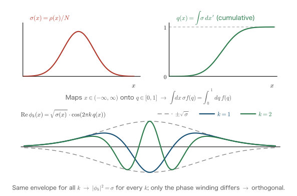

Chapter 9The Hohenberg–Kohn Theorems
In Part II, starting from the free-electron gas (Chapter 3), we proceeded to the Thomas–Fermi model (Chapter 4), the Hartree–Fock method (Chapter 5), the jellium model (Chapter 7), and linear response and screening (Chapter 8). Along the way we saw where the motivation to “write the energy of a many-electron system in terms of the electron density $\rho(\bm{r})$” comes from, how far it succeeded, and where it failed. The Thomas–Fermi model writes down the energy in terms of the density alone, but it reproduces neither the shell structure nor chemical bonding. The Hartree–Fock method is accurate, but it carries around the $N$-electron wave function (a Slater determinant) rather than the density. So, is it possible at all, even in principle, to describe a many-electron system exactly by the density alone? The answer to this question was given in the affirmative in 1964 by the two theorems of P. Hohenberg and W. Kohn. In this chapter we follow the proof of these theorems line by line, omitting nothing. We then bring out the problem of “$v$-representability,” which the proof tacitly assumes, and follow the process by which the foundations of the theory were fully secured by M. Levy's constrained search and J. E. Harriman's orbital construction. In the next chapter (Chapter 10), a practical computational scheme, the Kohn–Sham equations, will be built on these foundations.
- Prehistory: the causes of the failure of the Thomas–Fermi–Dirac model, and a complete derivation of the “averaging of the exchange potential” in Slater's X$\alpha$ method
- Proof, by contradiction, of the first Hohenberg–Kohn theorem (the density $\rho$ uniquely determines the external potential $v$)
- Proof of the second theorem (the variational principle for the energy functional), and the meaning of the universal functional $F[\rho]$
- The distinction between $v$-representability and $N$-representability, and Harriman's orbital construction (the explicit construction of orthogonal orbitals that reproduce any admissible density)
- The reformulation by Levy's constrained search, and the mechanism by which it resolves the $v$-representability problem
- What the theorems guarantee (existence) and what they do not guarantee (the explicit form of $F[\rho]$), and the strategy for Chapter 10
In this chapter, too, we use the Hartree atomic units introduced in Chapter 1 ($\hbar = m_e = e = 4\pi\varepsilon_0 = 1$). The unit of energy is the hartree (Ha), with $1\,\mathrm{Ha} = 2\,\mathrm{Ry} = 27.211\,\mathrm{eV}$, and the unit of length is the Bohr radius $a_0 = 0.5292\,\text{Å}$. Wherever we touch on the form of an equation in Rydberg units (Ry) in a historical context, we will say so explicitly each time.
9.1 Prehistory: The TFD Model and Slater's X$\alpha$ Method
To understand the value of the Hohenberg–Kohn theorems, the quickest route is to learn how far attempts to “construct the energy and the potential from the density” had progressed before the theorems, and what difficulties they faced. In this section we first review the limitations of the Thomas–Fermi–Dirac (TFD) model learned in Chapter 4, and then derive the X$\alpha$ method proposed by J. C. Slater in 1951. The X$\alpha$ method is based on the idea of “averaging the nonlocal Hartree–Fock exchange potential into a local potential that can be written in terms of the density alone,” and it is a direct forerunner of the later Kohn–Sham method.
9.1.1 Review of the Thomas–Fermi–Dirac model and its limitations
As we derived in Chapter 4, the TFD model borrows the results for the homogeneous electron gas locally for both the kinetic energy and the exchange energy. The total energy functional (excluding the internuclear repulsion) is
\begin{equation} E_{\mathrm{TFD}}[\rho] = \int \dd^3 r\, \rho(\bm{r})\, t(\rho(\bm{r})) + \int \dd^3 r\, \rho(\bm{r})\, \varepsilon_x(\rho(\bm{r})) + \int \dd^3 r\, \rho(\bm{r})\, v_{\mathrm{ext}}(\bm{r}) + \frac{1}{2}\iint \dd^3 r\, \dd^3 r'\, \frac{\rho(\bm{r})\rho(\bm{r}')}{|\bm{r}-\bm{r}'|} \label{eq:9-tfd} \end{equation}where the kinetic energy per electron $t(\rho)$ and the exchange energy per electron $\varepsilon_x(\rho)$ follow, respectively, from the Fermi-sphere calculation of Chapter 3 and the calculation of the jellium exchange energy in Chapter 7:
\begin{equation} t(\rho) = \frac{3}{10}(3\pi^2)^{2/3}\rho^{2/3}, \qquad \varepsilon_x(\rho) = -\frac{3}{4}\left(\frac{3}{\pi}\right)^{1/3}\rho^{1/3} \label{eq:9-tf-t} \end{equation}Imposing conservation of the number of electrons, $\int \dd^3 r\,\rho = N$, with a Lagrange multiplier $\mu$ and varying with respect to $\rho$ (the rules for functional derivatives were introduced in Chapter 4), the functional derivative of each term can be computed as follows.
\begin{align} \frac{\delta}{\delta\rho(\bm{r})}\int \dd^3 r'\, \rho\, t(\rho) &= \frac{\dd}{\dd\rho}\left[\frac{3}{10}(3\pi^2)^{2/3}\rho^{5/3}\right] = \frac{5}{3}\cdot\frac{3}{10}(3\pi^2)^{2/3}\rho^{2/3} = \frac{1}{2}(3\pi^2)^{2/3}\rho^{2/3}(\bm{r}) \label{eq:9-dtf}\\ \frac{\delta}{\delta\rho(\bm{r})}\int \dd^3 r'\, \rho\, \varepsilon_x(\rho) &= \frac{\dd}{\dd\rho}\left[-\frac{3}{4}\left(\frac{3}{\pi}\right)^{1/3}\rho^{4/3}\right] = -\frac{4}{3}\cdot\frac{3}{4}\left(\frac{3}{\pi}\right)^{1/3}\rho^{1/3} = -\left(\frac{3}{\pi}\right)^{1/3}\rho^{1/3}(\bm{r}) \label{eq:9-dex} \end{align}In the first line, since the integrand is a local function of $\rho(\bm{r}')$, the functional derivative reduces to an ordinary derivative (the formula for local functionals in Chapter 4), and we differentiated $\rho^{5/3}$. In the second line we likewise differentiated $\rho^{4/3}$. As shown in Chapter 4, the functional derivative of the Hartree term becomes $\int \dd^3 r' \rho(\bm{r}')/|\bm{r}-\bm{r}'|$, because by the symmetry of the double integral the factor $\tfrac{1}{2}$ cancels against a factor of 2. Collecting these results gives the TFD Euler equation
\begin{equation} \frac{1}{2}(3\pi^2)^{2/3}\rho^{2/3}(\bm{r}) - \left(\frac{3}{\pi}\right)^{1/3}\rho^{1/3}(\bm{r}) + v_{\mathrm{ext}}(\bm{r}) + \int \dd^3 r'\, \frac{\rho(\bm{r}')}{|\bm{r}-\bm{r}'|} = \mu \label{eq:9-tfd-euler} \end{equation}Here $\mu$ is the chemical potential (the energy change when one electron is added). This completes the review of Chapter 4.
The issue is the actual performance of this model. The TFD model has the following three well-known failures.
- The shell structure of atoms does not appear. The radial density distribution $D(r) = 4\pi r^2 \rho(r)$ has several peaks corresponding to the K, L, and M shells in a Hartree–Fock calculation, but the TFD density is monotonic and has no structure (Figure 9.1).
- Chemical bonds are not formed. It is known as a theorem that in the TFD model no two atoms form a molecule (the binding energy never becomes negative) (Teller's theorem).
- Negative ions cannot exist stably. An extra electron cannot be bound.
The main cause of the failure lies not in the exchange term but in the kinetic-energy functional. This can be seen quantitatively by comparing the kinetic energy of the argon atom obtained by different methods.
Example: Comparison of the kinetic energy of the argon atom
| Method | Kinetic energy (Ha) | Error |
|---|---|---|
| Hartree–Fock (reference value) | 526.82 | — |
| Evaluated with the Thomas–Fermi functional \eqref{eq:9-tf-t} | 489.95 | about −7% |
| Kohn–Sham method (LDA, Chapter 10) | 525.95 | about −0.2% |
The Hartree–Fock value follows immediately from the total-energy calculation if one uses the virial theorem (Chapter 2), $T = -E$. The error of the TF functional is about 37 Ha, which converts to about 1000 eV. Since the energy scale of chemical bonding is of the order of 0.1 Ha, the whole of chemistry is buried within this error. In contrast, in the Kohn–Sham method (Chapter 10), which evaluates the kinetic energy using orbitals, the error stays within 1 Ha. This table succinctly shows that the key to making density functional theory practical lies in the treatment of the kinetic energy.
9.1.2 Slater's idea: averaging the exchange potential
Next, we derive Slater's X$\alpha$ method, which approached “writing the potential in terms of the density” from a direction different from the TFD model. The starting point is the Hartree–Fock (HF) equations of Chapter 5. The exchange term of the HF equations acts on an orbital $\phi_{i\sigma}$ of spin $\sigma$ as
\begin{equation} (\hat{V}_x^{\sigma}\phi_{i\sigma})(\bm{r}) = -\sum_j^{\mathrm{occ}} \phi_{j\sigma}(\bm{r}) \int \dd^3 r'\, \frac{\phi_{j\sigma}^*(\bm{r}')\,\phi_{i\sigma}(\bm{r}')}{|\bm{r}-\bm{r}'|} \label{eq:9-hfx} \end{equation}(the sum runs over the occupied orbitals of the same spin $\sigma$; that there is no exchange term between different spins was shown in Chapter 5). This term has two troublesome features. First, it is a nonlocal operator that acts on $\phi_{i\sigma}(\bm{r})$ as an integral kernel rather than “multiplying” it. Second, the result of its action is different for each orbital. If the exchange term could be replaced by multiplication by a local potential $v_x(\bm{r})$ common to all orbitals, the HF equations would become ordinary one-particle Schrödinger equations, and the calculation would become dramatically simpler.
Slater's idea consists of two stages. First, we formally divide Eq. \eqref{eq:9-hfx} by $\phi_{i\sigma}(\bm{r})$ and define an orbital-specific local potential
\begin{equation} v_x^{i\sigma}(\bm{r}) \equiv \frac{(\hat{V}_x^{\sigma}\phi_{i\sigma})(\bm{r})}{\phi_{i\sigma}(\bm{r})} \label{eq:9-vxi} \end{equation}(it diverges at the nodes of $\phi_{i\sigma}$, but since this is only an intermediate step toward the averaging, we do not worry about that for now). Next, to eliminate the orbital dependence, we average $v_x^{i\sigma}$ using as the weight the “fraction of presence” of orbital $i$ at position $\bm{r}$,
\begin{equation} w_{i}^{\sigma}(\bm{r}) = \frac{|\phi_{i\sigma}(\bm{r})|^2}{\rho^{\sigma}(\bm{r})}, \qquad \rho^{\sigma}(\bm{r}) = \sum_i^{\mathrm{occ}} |\phi_{i\sigma}(\bm{r})|^2, \qquad \sum_i^{\mathrm{occ}} w_i^{\sigma}(\bm{r}) = 1 \label{eq:9-weight} \end{equation}We now show that this weighted average collects into a neat form, the Coulomb interaction with the exchange hole introduced in Chapter 5.
Derivation: The weighted average of the exchange potential and the exchange hole
We write down the weighted average exactly as defined and transform it line by line.
\begin{align} \bar{v}_x^{\sigma}(\bm{r}) &\equiv \sum_i^{\mathrm{occ}} w_i^{\sigma}(\bm{r})\, v_x^{i\sigma}(\bm{r}) \label{eq:9-avg1}\\ &= \sum_i^{\mathrm{occ}} \frac{|\phi_{i\sigma}(\bm{r})|^2}{\rho^{\sigma}(\bm{r})} \cdot \frac{(\hat{V}_x^{\sigma}\phi_{i\sigma})(\bm{r})}{\phi_{i\sigma}(\bm{r})} \label{eq:9-avg2}\\ &= \frac{1}{\rho^{\sigma}(\bm{r})} \sum_i^{\mathrm{occ}} \phi_{i\sigma}^*(\bm{r})\,(\hat{V}_x^{\sigma}\phi_{i\sigma})(\bm{r}) \label{eq:9-avg3}\\ &= -\frac{1}{\rho^{\sigma}(\bm{r})} \sum_i^{\mathrm{occ}}\sum_j^{\mathrm{occ}} \phi_{i\sigma}^*(\bm{r})\,\phi_{j\sigma}(\bm{r}) \int \dd^3 r'\, \frac{\phi_{j\sigma}^*(\bm{r}')\,\phi_{i\sigma}(\bm{r}')}{|\bm{r}-\bm{r}'|} \label{eq:9-avg4}\\ &= \int \dd^3 r'\, \frac{1}{|\bm{r}-\bm{r}'|} \left[-\frac{1}{\rho^{\sigma}(\bm{r})} \sum_{i}^{\mathrm{occ}} \phi_{i\sigma}^*(\bm{r})\phi_{i\sigma}(\bm{r}') \sum_{j}^{\mathrm{occ}} \phi_{j\sigma}(\bm{r})\phi_{j\sigma}^*(\bm{r}')\right] \label{eq:9-avg5}\\ &= \int \dd^3 r'\, \frac{\rho_x^{\sigma}(\bm{r},\bm{r}')}{|\bm{r}-\bm{r}'|} \label{eq:9-avg6} \end{align}The content of each step is as follows.
- \eqref{eq:9-avg1}→\eqref{eq:9-avg2}: We substituted the definitions of the weight, Eq. \eqref{eq:9-weight}, and the orbital-dependent potential, Eq. \eqref{eq:9-vxi}.
- \eqref{eq:9-avg2}→\eqref{eq:9-avg3}: We wrote $|\phi_{i\sigma}|^2 = \phi_{i\sigma}^*\phi_{i\sigma}$ and canceled $\phi_{i\sigma}$ in the denominator. Note that the divergence at nodes that worried us in the definition, Eq. \eqref{eq:9-vxi}, disappears by cancellation against the zeros of the weight. The averaged quantity is finite everywhere.
- \eqref{eq:9-avg3}→\eqref{eq:9-avg4}: We substituted the explicit form of the exchange term, Eq. \eqref{eq:9-hfx}.
- \eqref{eq:9-avg4}→\eqref{eq:9-avg5}: We interchanged the $\bm{r}'$ integral with the finite sums over $i,j$ (always allowed, because the number of occupied orbitals is finite) and arranged the result into factors that depend on $i$ and factors that depend on $j$.
- \eqref{eq:9-avg5}→\eqref{eq:9-avg6}: Using the one-body density matrix $\gamma^{\sigma}(\bm{r},\bm{r}') \equiv \sum_i^{\mathrm{occ}}\phi_{i\sigma}(\bm{r})\phi_{i\sigma}^*(\bm{r}')$, the double sum inside the square brackets becomes the product of $\sum_i \phi_{i\sigma}^*(\bm{r})\phi_{i\sigma}(\bm{r}') = [\gamma^{\sigma}(\bm{r},\bm{r}')]^*$ and $\sum_j \phi_{j\sigma}(\bm{r})\phi_{j\sigma}^*(\bm{r}') = \gamma^{\sigma}(\bm{r},\bm{r}')$, that is, $|\gamma^{\sigma}(\bm{r},\bm{r}')|^2$. We therefore put \begin{equation} \rho_x^{\sigma}(\bm{r},\bm{r}') \equiv -\frac{\left|\gamma^{\sigma}(\bm{r},\bm{r}')\right|^2}{\rho^{\sigma}(\bm{r})} = -\frac{\left|\sum_i^{\mathrm{occ}}\phi_{i\sigma}(\bm{r})\phi_{i\sigma}^*(\bm{r}')\right|^2}{\rho^{\sigma}(\bm{r})} \label{eq:9-xhole} \end{equation} This is precisely the exchange-hole density introduced in Chapter 5 (it is the quantity we wrote as $n_{\mathrm{x}}^\sigma(\bm{r},\bm{r}')$ in the notation of Chapter 5, and both its definition and its sum rule coincide exactly with those of $\rho_x^\sigma$ in this chapter. In Chapter 11 we also use $n_x(\bm{r},\bm{r}')$, which is further averaged with weights over the spin, so we will check the correspondence again in Section 11.2.5).
The sum rule for the exchange hole can also be verified in one line. Using the orthonormality of the orbitals, $\int \dd^3 r'\, \phi_{j\sigma}^*(\bm{r}')\phi_{i\sigma}(\bm{r}') = \delta_{ij}$, we obtain
\begin{align} \int \dd^3 r'\, \rho_x^{\sigma}(\bm{r},\bm{r}') &= -\frac{1}{\rho^{\sigma}(\bm{r})}\sum_{ij}^{\mathrm{occ}} \phi_{i\sigma}^*(\bm{r})\phi_{j\sigma}(\bm{r}) \int \dd^3 r'\,\phi_{j\sigma}^*(\bm{r}')\phi_{i\sigma}(\bm{r}') \notag\\ &= -\frac{1}{\rho^{\sigma}(\bm{r})}\sum_{ij}^{\mathrm{occ}} \phi_{i\sigma}^*(\bm{r})\phi_{j\sigma}(\bm{r})\,\delta_{ij} = -\frac{1}{\rho^{\sigma}(\bm{r})}\sum_{i}^{\mathrm{occ}} |\phi_{i\sigma}(\bm{r})|^2 = -1 \label{eq:9-sumrule} \end{align}In the first line we expanded the squared absolute value in Eq. \eqref{eq:9-xhole} into a double sum and moved the $\bm{r}'$ integral inside; in the second line only the $j=i$ terms survive by orthonormality; and finally we used the definition of $\rho^{\sigma}$, Eq. \eqref{eq:9-weight}. That is, seen from any position $\bm{r}$, the exchange hole represents a deficit of exactly one electron's worth of charge.
We have now seen that the averaged exchange potential can be written in the physically transparent form of “the electrostatic interaction between an electron and its exchange hole,” $\bar{v}_x^{\sigma}(\bm{r}) = \int \dd^3 r' \rho_x^{\sigma}(\bm{r},\bm{r}')/|\bm{r}-\bm{r}'|$. As it stands, however, $\rho_x^{\sigma}$ depends on the set of orbitals, so this is still not a “function of the density.” Slater's second approximation is to replace the shape of the exchange hole by that of jellium (the homogeneous electron gas).
9.1.3 The exchange hole of jellium and the X$\alpha$ potential
We now compute the one-body density matrix of the homogeneous electron gas, find the exchange hole in closed form, substitute it into $\bar{v}_x^{\sigma}$, and carry out the radial integral. From these three steps of calculation, the $\rho^{1/3}$ law of the X$\alpha$ potential emerges.
Derivation: The one-body density matrix and the exchange hole of the homogeneous electron gas
In jellium of volume $V$, the occupied orbitals of spin $\sigma$ are the plane waves $\phi_{\kk\sigma}(\bm{r}) = e^{i\kk\cdot\bm{r}}/\sqrt{V}$ ($|\kk| \le k_F^{\sigma}$) (Chapter 3). The one-body density matrix becomes a function of $\bm{s} = \bm{r}'-\bm{r}$ only:
\begin{align} \gamma^{\sigma}(\bm{r},\bm{r}') &= \sum_{|\kk|\le k_F^{\sigma}} \frac{e^{i\kk\cdot\bm{r}}}{\sqrt{V}}\frac{e^{-i\kk\cdot\bm{r}'}}{\sqrt{V}} = \frac{1}{V}\sum_{|\kk|\le k_F^{\sigma}} e^{-i\kk\cdot\bm{s}} \label{eq:9-dm1}\\ &= \frac{1}{(2\pi)^3}\int_{|\kk|\le k_F^{\sigma}} \dd^3 k\; e^{-i\kk\cdot\bm{s}} \label{eq:9-dm2}\\ &= \frac{1}{(2\pi)^3}\int_0^{k_F^{\sigma}} \dd k\, k^2 \int_0^{\pi} \dd\theta\, \sin\theta \int_0^{2\pi} \dd\varphi\; e^{-iks\cos\theta} \label{eq:9-dm3}\\ &= \frac{1}{(2\pi)^3}\int_0^{k_F^{\sigma}} \dd k\, k^2 \cdot 2\pi \int_{-1}^{1} \dd u\; e^{-iksu} \label{eq:9-dm4}\\ &= \frac{1}{(2\pi)^2}\int_0^{k_F^{\sigma}} \dd k\, k^2\, \frac{e^{-iks}-e^{iks}}{-iks} = \frac{1}{2\pi^2 s}\int_0^{k_F^{\sigma}} \dd k\, k \sin(ks) \label{eq:9-dm5}\\ &= \frac{1}{2\pi^2 s}\left[\left[-\frac{k\cos(ks)}{s}\right]_0^{k_F^{\sigma}} + \frac{1}{s}\int_0^{k_F^{\sigma}}\dd k\,\cos(ks)\right] \label{eq:9-dm6}\\ &= \frac{1}{2\pi^2 s}\left(\frac{\sin(k_F^{\sigma}s)}{s^2} - \frac{k_F^{\sigma}\cos(k_F^{\sigma}s)}{s}\right) = \frac{\sin x - x\cos x}{2\pi^2 s^3}, \qquad x \equiv k_F^{\sigma} s \label{eq:9-dm7} \end{align}Step by step: in Eq. \eqref{eq:9-dm2} we replaced the $\kk$ sum by an integral in the limit $V\to\infty$ (the density of $\kk$ points is $V/(2\pi)^3$, Chapter 3). In Eq. \eqref{eq:9-dm3} we took the direction of $\bm{s}$ as the polar axis and moved to spherical coordinates, and in Eq. \eqref{eq:9-dm4} we carried out the $\varphi$ integral ($2\pi$) and substituted $u=\cos\theta$. In Eq. \eqref{eq:9-dm5} we carried out the $u$ integral and combined the difference of exponential functions into a sine. Eq. \eqref{eq:9-dm6} is integration by parts of $k\sin(ks)$ with respect to $k$ (we took $k$ as the factor to be differentiated and $\sin(ks)$ as the factor to be integrated), and the boundary term vanishes at $k=0$. In Eq. \eqref{eq:9-dm7} we carried out the remaining integral $\int_0^{k_F}\cos(ks)\dd k = \sin(k_F s)/s$ and collected terms.
Using the spherical Bessel function of order one, $j_1(x) = (\sin x - x\cos x)/x^2$, and further using the fact that the density of spin $\sigma$ can be written from the volume of the Fermi sphere as $\rho^{\sigma} = (k_F^{\sigma})^3/(6\pi^2)$ (Chapter 3; the factor is $6\pi^2$ because this is for one spin component), we obtain
\begin{equation} \gamma^{\sigma}(s) = \frac{(k_F^{\sigma})^3}{2\pi^2}\,\frac{j_1(x)}{x} = 3\rho^{\sigma}\,\frac{j_1(x)}{x} \label{eq:9-dm-final} \end{equation}For $s\to 0$ we have $j_1(x)/x \to 1/3$, so $\gamma^{\sigma}(0) = \rho^{\sigma}$, which reproduces the expected property that the diagonal element of the density matrix equals the density. Substituting this into the definition of the exchange hole, Eq. \eqref{eq:9-xhole}, gives
\begin{equation} \rho_x^{\sigma}(s) = -\frac{|\gamma^{\sigma}(s)|^2}{\rho^{\sigma}} = -9\rho^{\sigma}\left\{\frac{j_1(k_F^{\sigma}s)}{k_F^{\sigma}s}\right\}^2 \label{eq:9-jellium-hole} \end{equation}This is the exchange hole of jellium. It has depth $-\rho^{\sigma}$ at $s=0$ (complete exclusion of electrons of the same spin: the Pauli principle), has a radius of roughly $s \sim \pi/k_F$, and, by the sum rule, Eq. \eqref{eq:9-sumrule}, carries a total charge of $-1$.
Derivation: Radial integral for the Slater exchange potential
We substitute the exchange hole of jellium, Eq. \eqref{eq:9-jellium-hole}, into the averaged exchange potential, Eq. \eqref{eq:9-avg6}. Because the hole is isotropic, we can write it in spherical coordinates ($s = |\bm{r}'-\bm{r}|$, the solid-angle integral gives $4\pi$, and the Coulomb kernel is $1/s$):
\begin{align} \bar{v}_x^{\sigma} &= \int_0^{\infty} 4\pi s^2\, \dd s\; \frac{1}{s}\left[-9\rho^{\sigma}\left\{\frac{j_1(k_F^{\sigma}s)}{k_F^{\sigma}s}\right\}^2\right] \label{eq:9-slater1}\\ &= -36\pi \rho^{\sigma} \int_0^{\infty} \dd s\; s\, \frac{\{j_1(k_F^{\sigma}s)\}^2}{(k_F^{\sigma}s)^2} \label{eq:9-slater2}\\ &= -\frac{36\pi \rho^{\sigma}}{(k_F^{\sigma})^2} \int_0^{\infty} \dd x\; \frac{\{j_1(x)\}^2}{x} \label{eq:9-slater3} \end{align}In Eq. \eqref{eq:9-slater2} we combined $s^2 \cdot (1/s) = s$ and collected the constants, and in Eq. \eqref{eq:9-slater3} we made the substitution $x = k_F^{\sigma}s$ ($\dd s = \dd x/k_F^{\sigma}$, $s = x/k_F^{\sigma}$). The remaining dimensionless integral
\begin{equation} I \equiv \int_0^{\infty} \dd x\, \frac{\{j_1(x)\}^2}{x} = \int_0^{\infty} \dd x\, \frac{(\sin x - x\cos x)^2}{x^5} \label{eq:9-I-def} \end{equation}will be evaluated exactly by using integration by parts twice. First, let $F(x) \equiv \sin x - x\cos x$; its derivative then takes the simple form
\begin{equation} F'(x) = \cos x - (\cos x - x\sin x) = x\sin x \label{eq:9-Fprime} \end{equation}(the product rule applied to $-x\cos x$ gives $-\cos x + x \sin x$, and the $\cos x$ terms cancel). Also, near the origin $\sin x = x - x^3/6 + \cdots$ and $x\cos x = x - x^3/2 + \cdots$, so $F(x) = x^3/3 + O(x^5)$. In the first integration by parts, we take $1/x^5$ as the factor to be integrated ($\int x^{-5}\dd x = -x^{-4}/4$) and $F^2$ as the factor to be differentiated:
\begin{align} I &= \left[-\frac{F(x)^2}{4x^4}\right]_0^{\infty} + \frac{1}{4}\int_0^{\infty} \dd x\, \frac{2F(x)F'(x)}{x^4} \label{eq:9-ibp1}\\ &= 0 + \frac{1}{2}\int_0^{\infty} \dd x\, \frac{F(x)\, x\sin x}{x^4} = \frac{1}{2}\int_0^{\infty} \dd x\, \frac{(\sin x - x\cos x)\sin x}{x^3} \label{eq:9-ibp2} \end{align}The boundary term vanishes at both ends: as $x\to 0$, $F^2/x^4 \sim (x^3/3)^2/x^4 = x^2/9 \to 0$, and as $x\to\infty$, $F^2/x^4 \le (1+x)^2/x^4 \to 0$. In Eq. \eqref{eq:9-ibp2} we substituted $F' = x\sin x$ (Eq. \eqref{eq:9-Fprime}) and canceled one factor of $x$. Next, let the numerator be
\begin{equation} N(x) \equiv (\sin x - x\cos x)\sin x = \sin^2 x - \frac{x}{2}\sin 2x \label{eq:9-Ndef} \end{equation}(we used $\sin x\cos x = \tfrac{1}{2}\sin 2x$). Its derivative is
\begin{equation} N'(x) = 2\sin x\cos x - \frac{1}{2}\sin 2x - x\cos 2x = \frac{1}{2}\sin 2x - x\cos 2x \label{eq:9-Nprime} \end{equation}(we combined $2\sin x \cos x = \sin 2x$), and near the origin $\sin^2 x = x^2 - x^4/3 + \cdots$ and $\tfrac{x}{2}\sin 2x = x^2 - \tfrac{2}{3}x^4 + \cdots$, so $N(x) = x^4/3 + O(x^6)$. In the second integration by parts, we take $1/x^3$ as the factor to be integrated ($-x^{-2}/2$):
\begin{align} \int_0^{\infty} \dd x\, \frac{N(x)}{x^3} &= \left[-\frac{N(x)}{2x^2}\right]_0^{\infty} + \frac{1}{2}\int_0^{\infty} \dd x\, \frac{N'(x)}{x^2} \label{eq:9-ibp3}\\ &= 0 + \frac{1}{2}\int_0^{\infty} \dd x\, \frac{1}{x^2}\left(\frac{1}{2}\sin 2x - x\cos 2x\right) \label{eq:9-ibp4} \end{align}The boundary term vanishes because $N/x^2 \sim x^2/3 \to 0$ as $x\to 0$ and $N/x^2 \to 0$ as $x\to\infty$ (using $|N| \le 1 + x/2$). Care is needed here. If we split Eq. \eqref{eq:9-ibp4} into two integrals, both $\int \sin 2x/x^2\,\dd x$ and $\int \cos 2x/x\,\dd x$ diverge logarithmically at the lower end $x=0$ individually (their integrands behave as $2/x$ and $1/x$, respectively). Only the combination is finite, so we cut off the lower end at $\epsilon > 0$ and take $\epsilon\to 0$ at the end. Integrating the $\sin 2x/x^2$ term by parts (taking $1/x^2$ as the factor to be integrated) gives
\begin{align} \int_{\epsilon}^{\infty} \dd x\, \frac{\sin 2x}{x^2} &= \left[-\frac{\sin 2x}{x}\right]_{\epsilon}^{\infty} + \int_{\epsilon}^{\infty} \dd x\, \frac{2\cos 2x}{x} = \frac{\sin 2\epsilon}{\epsilon} + 2\int_{\epsilon}^{\infty} \dd x\, \frac{\cos 2x}{x} \label{eq:9-ibp5} \end{align}(at the upper end $\sin 2x/x \to 0$). Putting this back into Eq. \eqref{eq:9-ibp4}, the coefficient of the divergent integral $\int_{\epsilon}^{\infty}\cos 2x/x\,\dd x$ becomes $\tfrac{1}{2}\cdot\tfrac{1}{2}\cdot 2 - \tfrac{1}{2} = 0$, so it cancels exactly, and what remains is
\begin{equation} \int_0^{\infty} \dd x\, \frac{N(x)}{x^3} = \lim_{\epsilon\to 0}\ \frac{1}{4}\,\frac{\sin 2\epsilon}{\epsilon} = \frac{1}{4}\cdot 2 = \frac{1}{2} \label{eq:9-ibp6} \end{equation}Therefore, from Eq. \eqref{eq:9-ibp2},
\begin{equation} I = \frac{1}{2}\cdot\frac{1}{2} = \frac{1}{4} \label{eq:9-I-result} \end{equation}Substituting this into Eq. \eqref{eq:9-slater3} and eliminating $\rho^{\sigma}$ with $\rho^{\sigma} = (k_F^{\sigma})^3/(6\pi^2)$, we obtain
\begin{align} \bar{v}_x^{\sigma} = -\frac{36\pi \rho^{\sigma}}{(k_F^{\sigma})^2}\cdot\frac{1}{4} = -\frac{9\pi \rho^{\sigma}}{(k_F^{\sigma})^2} = -\frac{9\pi}{(k_F^{\sigma})^2}\cdot\frac{(k_F^{\sigma})^3}{6\pi^2} = -\frac{3}{2\pi}k_F^{\sigma} \label{eq:9-slater-kf} \end{align}a surprisingly simple result. Finally, substituting $k_F^{\sigma} = (6\pi^2\rho^{\sigma})^{1/3}$, we rewrite it in terms of the density:
\begin{align} \bar{v}_x^{\sigma}(\bm{r}) = -\frac{3}{2\pi}(6\pi^2)^{1/3}\left[\rho^{\sigma}(\bm{r})\right]^{1/3} = -3\left(\frac{3\rho^{\sigma}(\bm{r})}{4\pi}\right)^{1/3} \label{eq:9-slater-final} \end{align}Here the equivalence of the coefficients follows from $\frac{3}{2\pi}(6\pi^2)^{1/3} = \frac{3}{2}\cdot 6^{1/3}\pi^{-1/3} = 3\cdot 3^{1/3}\cdot 2^{-2/3}\pi^{-1/3} = 3(3/4\pi)^{1/3}$ (we used $6^{1/3} = 2^{1/3}3^{1/3}$ and combined the powers of $2$).
We have now obtained an exchange potential determined on the spot by the local density. Slater proposed the form obtained by multiplying this expression by an adjustable parameter $\alpha$,
\begin{equation} v_{x\alpha}^{\sigma}(\bm{r}) = -3\alpha\left(\frac{3\rho^{\sigma}(\bm{r})}{4\pi}\right)^{1/3} \label{eq:9-xalpha} \end{equation}This is the X$\alpha$ method. For a spin-unpolarized system, $\rho^{\sigma} = \rho/2$, so in terms of the total density $\rho$ we have
\begin{equation} v_{x\alpha}(\bm{r}) = -3\alpha\left(\frac{3\rho(\bm{r})}{8\pi}\right)^{1/3} \ \text{[Hartree]} \qquad\Longleftrightarrow\qquad v_{x\alpha}(\bm{r}) = -6\alpha\left(\frac{3\rho(\bm{r})}{8\pi}\right)^{1/3} \ \text{[Rydberg]} \label{eq:9-xalpha-unpol} \end{equation}Note that many historical papers are written in Rydberg units (1 Ha = 2 Ry), which is why the coefficient there is 6.
Let us make the meaning of the parameter $\alpha$ clear. The derivation above (averaging the exchange hole over the whole Fermi sphere) corresponds to $\alpha = 1$. On the other hand, if we construct the potential by taking the variation of Dirac's exchange energy functional $E_x^{\mathrm{LDA}}[\rho] = \int \dd^3 r\, \rho\,\varepsilon_x(\rho)$ (Eq. \eqref{eq:9-tf-t}), then, as calculated in Eq. \eqref{eq:9-dex},
\begin{align} v_x^{\mathrm{var}}(\bm{r}) = \frac{\delta E_x^{\mathrm{LDA}}}{\delta\rho(\bm{r})} = -\left(\frac{3}{\pi}\right)^{1/3}\rho^{1/3} = \frac{2}{3}\times\left[-3\left(\frac{3\rho}{8\pi}\right)^{1/3}\right] \label{eq:9-alpha23} \end{align}The last equality can be verified by rearranging $3(3/8\pi)^{1/3} = 3\cdot 3^{1/3}\cdot 2^{-1}\cdot\pi^{-1/3}\cdot 2^{0}\cdots$: we have $3\left(\tfrac{3}{8\pi}\right)^{1/3} = \tfrac{3}{2}\left(\tfrac{3}{\pi}\right)^{1/3}$, and $\left(\tfrac{3}{\pi}\right)^{1/3} = \tfrac{2}{3}\cdot\tfrac{3}{2}\left(\tfrac{3}{\pi}\right)^{1/3}$. In other words, the coefficient that comes out of the variation is $2/3$ times Slater's average, and this corresponds to the value $\alpha = 2/3$ adopted by Gáspár (1954) and later by Kohn and Sham (1965). The origin of this factor is the difference in how the average is taken (Slater averages over the entire Fermi sphere, whereas the variation corresponds to the electrons on the Fermi surface). In actual atomic calculations, when $\alpha$ is adjusted to reproduce the HF total energy, one finds $\alpha \approx 0.77$ for light atoms and $\alpha \approx 0.70$ for heavy atoms, and values in the range $2/3 \le \alpha \le 1$ were used. The fact that $\alpha$ is chosen somewhat larger than $2/3$ can be interpreted as meaning that part of the correlation effects is renormalized into it empirically, in addition to exchange.
Physical Meaning: The lineage of “building the potential from the density,” and its unease
The TFD model (1927–30) is an attempt to “write the energy in terms of the density,” and the X$\alpha$ method (1951) is an attempt to “write the exchange potential in terms of the density.” Both arrive at the same combination $\rho^{1/3}$, and both are products of the same idea of borrowing the homogeneous electron gas locally (the local density approximation). The X$\alpha$ method worked reasonably well for real atoms, molecules, and solids, and was the mainstay of materials-science calculations in the 1960s. However, these are, after all, a succession of approximations. Uncontrolled errors enter both at the stage where the orbital dependence of HF exchange is averaged with a weight and at the stage where the exchange hole is replaced by that of jellium. And the biggest problem lies at a much more fundamental level: at that time there was no guarantee anywhere that “the ground state of a many-electron system is determined exactly by the density $\rho(\bm{r})$ alone.” The wave function $\Psi(\bm{r}_1,\ldots,\bm{r}_N)$ has $3N$ variables, whereas $\rho(\bm{r})$ has only three. Is there any reason to believe that the physics of the ground state is not lost even under such a drastic compression of information? The answer “yes” to this question is the Hohenberg–Kohn theorem. We turn to the main subject in the next section.
9.2 Statement of the Theorems
In this section we first fix the setup of the problem (which family of Hamiltonians we consider), define the density and prove the basic identity $\braket{\hat{V}_{\mathrm{ext}}} = \int v\rho\,\dd^3r$, and then state the two Hohenberg–Kohn theorems precisely. The proofs are given in Sections 9.3 and 9.4.
9.2.1 Setup: What differs from system to system, and what is common
Consider a system of $N$ electrons moving in an external potential $v(\bm{r})$ (a typical example is $-\sum_I Z_I/|\bm{r}-\bm{R}_I|$ created by the nuclei). The Hamiltonian is
\begin{equation} \hat{H} = \hat{T} + \hat{V}_{ee} + \hat{V}_{\mathrm{ext}}, \qquad \hat{T} = -\frac{1}{2}\sum_{i=1}^{N}\nabla_i^2, \qquad \hat{V}_{ee} = \sum_{i<j}\frac{1}{|\bm{r}_i-\bm{r}_j|}, \qquad \hat{V}_{\mathrm{ext}} = \sum_{i=1}^{N} v(\bm{r}_i) \label{eq:9-ham} \end{equation}Here we make a decisively important observation: the kinetic energy $\hat{T}$ and the electron–electron interaction $\hat{V}_{ee}$ are the same operators for every system, once the number of electrons $N$ is fixed. Whether the system is a hydrogen molecule, a silicon crystal, or a protein, only $v(\bm{r})$ (and $N$) differ. Therefore, the information that specifies a system is exhausted by the pair $(N, v)$. Given $(N,v)$, the Schrödinger equation $\hat{H}\Psi = E\Psi$ is determined, and so is its ground state $\Psi_0$ (unique up to a phase if there is no degeneracy), and hence every property of the ground state.
The electron density is defined from the ground state $\Psi$ by
\begin{equation} \rho(\bm{r}) = N \sum_{\sigma_1\cdots\sigma_N}\int \dd^3 r_2 \cdots \dd^3 r_N\; \left|\Psi(\bm{r}\sigma_1, \bm{r}_2\sigma_2, \ldots, \bm{r}_N\sigma_N)\right|^2 \label{eq:9-density-def} \end{equation}(all the spin variables $\sigma_i$ are summed over). The relation $\int \dd^3 r\, \rho(\bm{r}) = N$ follows from the normalization of $\Psi$. With this definition, we first prove a basic identity that we use throughout this chapter.
Derivation: The expectation value of the external potential can be written as $\int v\rho$
To lighten the notation, we group $x_i = (\bm{r}_i, \sigma_i)$ and let $\int \dd x_i$ denote “integration over $\bm{r}_i$ and summation over $\sigma_i$.” What we want to show is
\begin{equation} \braket{\Psi|\hat{V}_{\mathrm{ext}}|\Psi} = \int \dd^3 r\, v(\bm{r})\,\rho(\bm{r}) \label{eq:9-vrho} \end{equation}We write out the expectation value as defined:
\begin{align} \braket{\Psi|\hat{V}_{\mathrm{ext}}|\Psi} &= \sum_{i=1}^{N} \int \dd x_1 \cdots \dd x_N\; \Psi^*(x_1,\ldots,x_N)\, v(\bm{r}_i)\, \Psi(x_1,\ldots,x_N) \label{eq:9-vd1}\\ &= \sum_{i=1}^{N} \int \dd x_1 \cdots \dd x_N\; v(\bm{r}_1)\, \left|\Psi(x_1,\ldots,x_N)\right|^2 \label{eq:9-vd2}\\ &= N \int \dd x_1\; v(\bm{r}_1) \int \dd x_2 \cdots \dd x_N\; \left|\Psi(x_1,\ldots,x_N)\right|^2 \label{eq:9-vd3}\\ &= \int \dd^3 r\; v(\bm{r})\, \rho(\bm{r}) \label{eq:9-vd4} \end{align}The justification of each step:
- \eqref{eq:9-vd1}→\eqref{eq:9-vd2}: In the $i$th term we interchanged the names of the integration variables ($x_1 \leftrightarrow x_i$). Then $v(\bm{r}_i)$ becomes $v(\bm{r}_1)$. Since $\Psi$ is antisymmetric, the interchange produces a sign $(-1)$, but in $\Psi^*\Psi$ the sign is squared and $|\Psi|^2$ becomes totally symmetric, so the value does not change. Renaming integration variables is always an allowed operation.
- \eqref{eq:9-vd2}→\eqref{eq:9-vd3}: Since the summand no longer depends on $i$, the sum is a sum of $N$ identical terms, so we factored out $N$ and collected the integrals unrelated to $v(\bm{r}_1)$ at the end.
- \eqref{eq:9-vd3}→\eqref{eq:9-vd4}: We recognized the definition of the density \eqref{eq:9-density-def} (the spin sum over $\sigma_1$, as part of the integral over $x_1$, is also included in the definition of the density).
The meaning of this identity is deep. Although $\hat{V}_{\mathrm{ext}}$ is an operator on a $3N$-dimensional space, its expectation value can be calculated exactly from the three-dimensional density alone. Of the three terms of the Hamiltonian \eqref{eq:9-ham}, the only term that differs from system to system is precisely the term that can be written in terms of the density alone—this fortunate structure is the foundation of all the proofs that follow.
9.2.2 The two theorems
Now that the preparations are complete, we state the theorems. Below, “ground state” means the normalized ground state of a Hamiltonian of the form of Eq. \eqref{eq:9-ham}, and for the time being we assume that it is non-degenerate (the degenerate case is treated in Sections 9.3.4 and 9.6).
Theorem: The first Hohenberg–Kohn theorem (1964)
The electron density $\rho(\bm{r})$ of a non-degenerate ground state determines the external potential $v(\bm{r})$ uniquely up to a constant. That is, if two external potentials $v$ and $v'$ give the same ground-state density, then $v(\bm{r}) - v'(\bm{r}) = \text{const}$.
Therefore, through the chain of correspondences $\rho \to v \to \hat{H} \to \Psi_0$, the ground-state wave function is a functional of the density, $\Psi_0 = \Psi[\rho]$, and every observable of the ground state is a functional of $\rho(\bm{r})$.
Theorem: The second Hohenberg–Kohn theorem (1964)
Define the universal functional by $$F_{\mathrm{HK}}[\rho] \equiv \braket{\Psi[\rho]|\,\hat{T}+\hat{V}_{ee}\,|\Psi[\rho]}$$ (where $\Psi[\rho]$ is the wave function, guaranteed by the first theorem, that has $\rho$ as its ground-state density). If the energy functional of a system with external potential $v$ is $$E_v[\rho] \equiv F_{\mathrm{HK}}[\rho] + \int \dd^3 r\, v(\bm{r})\rho(\bm{r})$$ then $E_v[\rho]$ takes its minimum value at the true ground-state density $\rho_0$ of $v$, and that minimum value is equal to the ground-state energy $E_0$: $$E_v[\tilde{\rho}] \ge E_v[\rho_0] = E_0 \qquad (\text{any admissible trial density } \tilde{\rho})$$
The content of the second theorem, written as a single equation, is the following variational principle, one of the most important results of this chapter.
Physical Meaning: What “universal” means for the universal functional $F_{\mathrm{HK}}[\rho]$
Only $\hat{T} + \hat{V}_{ee}$ appears in the definition of $F_{\mathrm{HK}}[\rho]$. As noted above, these two are operators that do not depend on the system, so $F_{\mathrm{HK}}$ is a functional that does not depend on the external potential and is common to all $N$-electron systems. The $F_{\mathrm{HK}}$ of the hydrogen molecule and the $F_{\mathrm{HK}}$ of the silicon crystal are the same functional (only the number of electrons differs). If someone could write down the exact expression of $F_{\mathrm{HK}}[\rho]$ even once, then all that would remain is to add $\int v\rho$ for each system and minimize with respect to the three-dimensional density, and the ground state of any material could be solved. The $3N$-dimensional Schrödinger equation is transformed into a three-dimensional variational problem. Of course, as discussed later, the theorem only guarantees the existence of $F_{\mathrm{HK}}$ and does not give its expression. Even so, the very fact that “such a functional exists” was an entirely new viewpoint, one that justifies attempts such as TFD and X$\alpha$ as “approximations to an exact theory.”
Figure 9.2 summarizes the structure of the theorems. Everyone accepts the two maps going from the potential to the density (the map C that solves the Schrödinger equation, and the map D that squares the wave function and integrates). The claim of the first theorem is that this composite map is invertible (injective).
9.3 Proof of the First Theorem
We now prove the first theorem. What we must show is that “different $v$ (apart from a constant difference) give different ground-state densities,” or, in contrapositive form, “two potentials that give the same density differ only by a constant.” The proof is a two-stage proof by contradiction. In stage (i) we show that “if $v$ differs, the ground-state wave function $\Psi$ also differs” (injectivity of the map C). In stage (ii) we show that “if $\Psi$ differs, the ground-state density $\rho$ also differs” (injectivity of the map D on ground states). Together these give $v \ne v' + \text{const} \Rightarrow \rho \ne \rho'$, and the theorem follows.
9.3.1 Stage (i): different potentials give different wave functions
Consider two potentials with $v(\bm{r}) - v'(\bm{r}) \ne \text{const}$, and let their Hamiltonians and Schrödinger equations be
\begin{align} \hat{H} &= \hat{T} + \hat{V}_{ee} + \sum_i v(\bm{r}_i), & \hat{H}\Psi &= E\Psi \label{eq:9-se1}\\ \hat{H}' &= \hat{T} + \hat{V}_{ee} + \sum_i v'(\bm{r}_i), & \hat{H}'\Psi' &= E'\Psi' \label{eq:9-se2} \end{align}($\Psi,\Psi'$ are the respective ground states). As the assumption for the proof by contradiction, let $\Psi = \Psi'$. Since the same function $\Psi$ satisfies both equations, subtracting Eq. \eqref{eq:9-se2} from Eq. \eqref{eq:9-se1} side by side gives
\begin{align} (\hat{H} - \hat{H}')\,\Psi &= (E - E')\,\Psi \label{eq:9-sub1}\\ \left[\sum_{i=1}^{N}\left\{v(\bm{r}_i) - v'(\bm{r}_i)\right\}\right]\Psi(x_1,\ldots,x_N) &= (E - E')\,\Psi(x_1,\ldots,x_N) \label{eq:9-sub2} \end{align}In going from Eq. \eqref{eq:9-sub1} to Eq. \eqref{eq:9-sub2}, we used the fact that $\hat{T}$ and $\hat{V}_{ee}$ are exactly common to the two Hamiltonians, so they cancel in the difference and only the difference of the external potentials remains. This is the crux of the proof: because the differential operator $\hat{T}$ has disappeared, Eq. \eqref{eq:9-sub2} is not a differential equation but a mere multiplicative equality (an identity between numbers that holds at each configuration point $(\bm{r}_1,\ldots,\bm{r}_N)$).
At configurations where $\Psi(x_1,\ldots,x_N) \ne 0$, we may divide both sides by $\Psi$:
\begin{equation} \sum_{i=1}^{N}\left\{v(\bm{r}_i) - v'(\bm{r}_i)\right\} = E - E' \qquad (\Psi \ne 0 \text{ at all configurations}) \label{eq:9-const} \end{equation}The ground-state wave function (for any reasonable potential) never vanishes identically on an open set of configuration space (see the Math Note below). Therefore Eq. \eqref{eq:9-const} holds at virtually all configurations. Fix $\bm{r}_2, \ldots, \bm{r}_N$ at suitable values and vary only $\bm{r}_1$. Every term on the left-hand side other than the first is then a constant, so
\begin{equation} v(\bm{r}_1) - v'(\bm{r}_1) = (E - E') - \sum_{i=2}^{N}\left\{v(\bm{r}_i) - v'(\bm{r}_i)\right\} = \text{const} \label{eq:9-vconst} \end{equation}This contradicts the assumption $v - v' \ne \text{const}$. Hence the assumption of the proof by contradiction is false, and we have shown that if $v - v' \ne \text{const}$, then $\Psi \ne \Psi'$. Note also that when $v' = v + c$ (a constant difference), $\hat{H}' = \hat{H} + Nc$, so the eigenfunctions are exactly the same and only the eigenvalues are shifted by $Nc$. It is a familiar fact that shifting the origin of energy does not change the physics, and the proviso “apart from a constant” refers to this trivial freedom.
Math Note: Where can a wave function vanish? (unique continuation)
In the argument above we used the fact that “$\Psi$ does not vanish identically on an open set of configuration space (a region with nonzero volume).” This follows from a theorem on elliptic partial differential equations called the unique continuation theorem: if a solution of the Schrödinger equation with a locally square-integrable potential vanishes identically on some open set, then the solution vanishes throughout the whole space. A normalized ground state is not zero throughout the whole space, so it cannot vanish on an open set. A nodal surface (a hypersurface on which the function vanishes) may exist, but it is a set of measure zero, and this is enough for Eq. \eqref{eq:9-const} to hold at “almost all configurations.” If both sides are continuous functions, being equal almost everywhere is equivalent to being equal everywhere. The Coulomb potential is known to lie within the scope of this theorem. In the original paper of Hohenberg and Kohn this point was assumed implicitly, and a rigorous treatment was developed by Lieb (E. H. Lieb, 1983) and others. On a first reading, you may proceed with the intuition that “the ground state does not vanish over an entire chunk of space.”
9.3.2 Stage (ii): different wave functions give different ground-state densities
Next, starting from $\Psi \ne \Psi'$ established in stage (i), we take as the assumption of the proof by contradiction that “$\Psi$ and $\Psi'$ give the same density $\rho(\bm{r})$.” The only tool we use is the variational principle of quantum mechanics (the Rayleigh–Ritz principle). For safety, let us review it.
Math Note: The variational principle and the condition for equality
Let $\{\Psi_n\}$ be the normalized eigenstates of $\hat{H}$, with eigenvalues $E_0 \le E_1 \le \cdots$. Expand an arbitrary normalized state $\Phi$ as $\Phi = \sum_n c_n \Psi_n$ ($\sum_n |c_n|^2 = 1$). The expectation value is then
\begin{align} \braket{\Phi|\hat{H}|\Phi} = \sum_{n} |c_n|^2 E_n = E_0 \sum_n |c_n|^2 + \sum_{n} |c_n|^2 (E_n - E_0) = E_0 + \sum_{n} |c_n|^2 (E_n - E_0) \;\ge\; E_0 \label{eq:9-ritz} \end{align}In the first equality we used the orthogonality of the eigenstates, $\braket{\Psi_m|\Psi_n} = \delta_{mn}$, which makes the cross terms vanish; in the second we added and subtracted $E_0$; and in the third we used normalization. The final inequality follows from $E_n - E_0 \ge 0$ and $|c_n|^2 \ge 0$. Equality holds only when $c_n = 0$ for every $n$ with $E_n > E_0$, that is, when $\Phi$ belongs to the eigenspace of the ground state. If the ground state is non-degenerate, equality is equivalent to $\Phi = e^{i\theta}\Psi_0$ (the ground state itself, up to a phase). In other words: if the expectation value is taken in a state that is not the ground state, the inequality is necessarily a “strict inequality.” This word “strict” is the lifeline of the proof that follows.
Now we compute. Use $\Psi'$ (the ground state of $\hat{H}'$) as a trial function for $\hat{H}$. Since $\Psi' \ne \Psi$ and the ground state of $\hat{H}$ is assumed to be non-degenerate, equality in the variational principle does not hold, and
\begin{align} E &= \braket{\Psi|\hat{H}|\Psi} \;\lt\; \braket{\Psi'|\hat{H}|\Psi'} \label{eq:9-ii1}\\ &= \braket{\Psi'|\hat{H}'|\Psi'} + \braket{\Psi'|\,\hat{H}-\hat{H}'\,|\Psi'} \label{eq:9-ii2}\\ &= E' + \left\langle \Psi'\,\middle|\,\sum_{i=1}^N \left\{v(\bm{r}_i) - v'(\bm{r}_i)\right\}\,\middle|\,\Psi'\right\rangle \label{eq:9-ii3}\\ &= E' + \int \dd^3 r\; \rho(\bm{r})\left\{v(\bm{r}) - v'(\bm{r})\right\} \label{eq:9-ii4} \end{align}The justification of each step is as follows.
- Eq. \eqref{eq:9-ii1}: the variational principle. Since $\Psi'$ is not the ground state of $\hat{H}$ ($\Psi' \ne \Psi$ by stage (i), and the ground state is non-degenerate), the inequality is a strict inequality.
- Eq. \eqref{eq:9-ii1}→Eq. \eqref{eq:9-ii2}: we wrote $\hat{H} = \hat{H}' + (\hat{H} - \hat{H}')$ and split the expectation value linearly.
- Eq. \eqref{eq:9-ii2}→Eq. \eqref{eq:9-ii3}: for the first term, since $\Psi'$ is the normalized ground state of $\hat{H}'$, $\braket{\Psi'|\hat{H}'|\Psi'} = E'$. In the second term, as in Eq. \eqref{eq:9-sub1}, $\hat{T}, \hat{V}_{ee}$ cancel, and only the difference of the external potentials remains.
- Eq. \eqref{eq:9-ii3}→Eq. \eqref{eq:9-ii4}: we applied the identity Eq. \eqref{eq:9-vrho} to $\Psi'$. Here we are using the assumption of the proof by contradiction that “the density of $\Psi'$ is also the same $\rho$”.
We repeat exactly the same argument with the primes interchanged. This time we take $\Psi$ as a trial function for $\hat{H}'$ ($\Psi \ne \Psi'$, and the ground state of $\hat{H}'$ is also non-degenerate):
\begin{align} E' = \braket{\Psi'|\hat{H}'|\Psi'} \;\lt\; \braket{\Psi|\hat{H}'|\Psi} = E + \int \dd^3 r\; \rho(\bm{r})\left\{v'(\bm{r}) - v(\bm{r})\right\} \label{eq:9-ii5} \end{align}(The intermediate manipulations are identical to Eqs. \eqref{eq:9-ii2}–\eqref{eq:9-ii4}, so one need only read the same four steps with the replacements $v \leftrightarrow v'$, $\Psi \leftrightarrow \Psi'$, $E \leftrightarrow E'$. Again we used the fact that the density $\rho$ is common.) Now, adding Eq. \eqref{eq:9-ii4} and Eq. \eqref{eq:9-ii5} side by side, the integral terms cancel exactly, $\int\rho(v-v') + \int\rho(v'-v) = 0$, and we arrive at
\begin{equation} E + E' \;\lt\; E' + E \label{eq:9-contradiction} \end{equation}an obvious contradiction. Hence the assumption of the proof by contradiction is false, and if $\Psi \ne \Psi'$, their densities differ. Combined with stage (i), $v - v' \ne \text{const} \Rightarrow \rho \ne \rho'$; that is, the first theorem is proved.
9.3.3 What has been proved: the scope of the theorem
Let us restate the result precisely. If $\rho(\bm{r})$ is known, then $v(\bm{r})$ is known (up to a constant), and $N = \int\rho\,\dd^3r$ is known too, so the Hamiltonian Eq. \eqref{eq:9-ham} can be fully reconstructed. Once the Hamiltonian is known, then in principle we can solve the Schrödinger equation and obtain not only the ground state but also all of the excited states. In other words, the ground-state density, a function of three variables, carries (in this sense) the same information as the ground-state wave function of $3N$ variables. Note, however, that the variational principle of the second theorem can be used only for the energy and density of the ground state. An excited state is “in principle a functional of $\rho$,” but the theorem gives no practical prescription for extracting it (theories that treat excited states are left to time-dependent DFT and the like; we touch on this in Chapter 18).
Example: The density even knows the positions and charges of the nuclei
For a Coulomb system $v(\bm{r}) = -\sum_I Z_I/|\bm{r}-\bm{R}_I|$, it is known that $v$ can be read off directly from the density without invoking the first theorem (Kato's cusp theorem). The ground-state density has a peak (cusp) at each nuclear position $\bm{R}_I$, and the sharpness of the peak satisfies $$\left.\frac{\partial \bar{\rho}}{\partial r}\right|_{r\to R_I} = -2 Z_I\, \bar{\rho}(\bm{R}_I)$$ ($\bar\rho$ is the spherically averaged density around the nucleus, and $r$ is the distance from the nucleus). That is, the position of the cusp tells us $\bm{R}_I$, and the sharpness of the cusp tells us $Z_I$. Once the positions and charges of the nuclei are known, $v$ is completely determined. This verifies the Coulomb-system version of the HK first theorem with the “real thing,” and it is an example in which one can see that the information identifying the system is actually embedded in the density, a three-dimensional function. Of course, the greatness of the HK theorem lies in guaranteeing uniqueness for any external potential, not only for the Coulomb type.
9.3.4 The case of degeneracy and points to note
Looking back at the proof, we see that non-degeneracy was used only for the “strict inequality” in stage (ii). Let us examine carefully, case by case, what happens when degeneracy is present. Suppose that from the ground states (which may now be more than one) of $\hat{H}$ and $\hat{H}'$ ($v - v' \ne \text{const}$) we can pick $\Psi$ (a ground state of $\hat{H}$) and $\Psi'$ (a ground state of $\hat{H}'$) that have the same density $\rho$.
- Case 1: $\Psi'$ happens to be a ground state of $\hat{H}$ as well. Then $\Psi'$ satisfies both $\hat{H}\Psi' = E\Psi'$ and $\hat{H}'\Psi' = E'\Psi'$, so the subtraction argument of stage (i) applies as it stands, giving $v - v' = \text{const}$, which contradicts the assumption.
- Case 2: $\Psi'$ is not a ground state of $\hat{H}$. By the condition for equality in the variational principle (Math Note), $\braket{\Psi'|\hat{H}|\Psi'} \gt E$ holds as a strict inequality, and Eq. \eqref{eq:9-ii4} is obtained. We split into cases in the same way on the side of $\Psi$: if $\Psi$ is a ground state of $\hat{H}'$, the argument of Case 1 gives a contradiction; otherwise \eqref{eq:9-ii5} holds as a strict inequality. If both inequalities hold (at least one of them being strict), adding them side by side produces a contradiction.
Therefore, the conclusion itself that “the ground-state density determines the potential” survives even in the presence of degeneracy. The real problem of degeneracy lies elsewhere: degenerate ground states $\Psi_1, \Psi_2, \ldots$ generally have different densities $\rho_1, \rho_2, \ldots$, so the correspondence “the ground state $\Psi[\rho]$ belonging to the density $\rho$” may cease to be single-valued; and conversely, for a density that is not the density of any single ground state (for example, a mixture of $\rho_1$ and $\rho_2$), no $\Psi[\rho]$ exists. The definition of the functional $F_{\mathrm{HK}}[\rho] = \braket{\Psi[\rho]|\hat{T}+\hat{V}_{ee}|\Psi[\rho]}$ used in the second theorem then becomes shaky. This deficiency is resolved completely by Levy's construction in Section 9.6, so until then we proceed assuming non-degeneracy.
9.4 Proof of the Second Theorem
The first theorem is a statement of uniqueness—“the density uniquely determines the system”—and in itself it is not a prescription for computation. It is the second theorem that gives the principle for actually finding the density—that is, “what does the correct density minimize?” In this section we first define the universal functional $F_{\mathrm{HK}}[\rho]$ rigorously as a consequence of the first theorem, and then derive the variational principle using only the Rayleigh–Ritz variational principle (the Math Note in Section 9.3.2) as a tool. The proof itself ends in four lines, but knowing exactly where in those four lines each assumption is used will serve as the blueprint when we repair the foundations of the theory in Sections 9.5 and 9.6.
9.4.1 Definition of the universal functional $F_{\mathrm{HK}}[\rho]$
To define a functional, we must first fix its domain. The definition of $F_{\mathrm{HK}}$ requires $\Psi[\rho]$, and it is the first theorem that guarantees the existence of $\Psi[\rho]$, so $F_{\mathrm{HK}}$ can be defined only for those $\rho$ that “are, to begin with, the ground-state density of some external potential.” We give a name to this obvious fact.
Definition: $v$-representable densities and the universal functional
Fix the number of electrons $N$. If there exists an external potential $v(\bm{r})$ such that the density of the non-degenerate ground state of the Hamiltonian $\hat{H}=\hat{T}+\hat{V}_{ee}+\sum_i v(\bm{r}_i)$ coincides exactly with $\rho(\bm{r})$, then $\rho$ is said to be representable by a potential $v$ ($v$-representable). We write $\mathcal{A}_N$ for the set of all $v$-representable $N$-electron densities.
For $\rho \in \mathcal{A}_N$, the chain $\rho \to v \to \hat{H} \to \Psi_0$ of the first theorem determines uniquely (up to a global phase) the ground-state wave function $\Psi[\rho]$ whose density is $\rho$. We therefore define
\begin{equation} F_{\mathrm{HK}}[\rho] \equiv \braket{\Psi[\rho]\,|\,\hat{T}+\hat{V}_{ee}\,|\,\Psi[\rho]}, \qquad \rho \in \mathcal{A}_N \label{eq:9-FHK-def} \end{equation}and call it the Hohenberg–Kohn universal functional.
We wish to emphasize that this definition does not hold without the first theorem. If there were two or more ground states giving the same density $\rho$, the expression $\braket{\Psi[\rho]|\hat{T}+\hat{V}_{ee}|\Psi[\rho]}$ would not specify “which $\Psi$ to use,” and its value would not be determined. At first sight the first theorem seems to be a statement of uniqueness that prompts the question “so what?”, but in fact it plays a decisive role in creating the vocabulary needed to state the second theorem.
Using this $F_{\mathrm{HK}}$, we define the energy functional of a system with external potential $v$ by
\begin{equation} E_v[\rho] \equiv F_{\mathrm{HK}}[\rho] + \int \dd^3 r\, v(\bm{r})\,\rho(\bm{r}), \qquad \rho \in \mathcal{A}_N \label{eq:9-Ev-def} \end{equation}. The first term on the right-hand side contains no $v$ at all (it uses only $\hat{T}$ and $\hat{V}_{ee}$). The individuality of each system appears only in the second term, and moreover its dependence on $\rho$ is the simplest possible, namely linear. What we stated in Section 9.2.1, that “the information specifying the system is exhausted by $(N,v)$,” and the identity \eqref{eq:9-vrho} of Section 9.2 fit together neatly here.
9.4.2 Proof of the variational inequality
We now show that $E_v[\tilde{\rho}] \ge E_0$ holds for any trial density $\tilde{\rho} \in \mathcal{A}_N$. The strategy of the proof is simple: $\tilde{\rho}$ is the ground-state density of a different potential $\tilde{v}$, so the corresponding wave function $\Psi[\tilde{\rho}]$ exists. This wave function is by no means a ground state for “our” Hamiltonian $\hat{H}$, but it is still a normalized antisymmetric $N$-electron wave function, so it is perfectly legitimate as a trial function for $\hat{H}$. All that remains is to apply the Rayleigh–Ritz principle.
Derivation: The variational inequality of the second theorem
Let $\tilde{\rho} \in \mathcal{A}_N$ be an arbitrary trial density, and let $\Psi[\tilde{\rho}]$ be the corresponding ground-state wave function. We transform $E_v[\tilde{\rho}]$, starting from the definition.
\begin{align} E_v[\tilde{\rho}] &= F_{\mathrm{HK}}[\tilde{\rho}] + \int \dd^3 r\, v(\bm{r})\,\tilde{\rho}(\bm{r}) \label{eq:9-var1}\\ &= \braket{\Psi[\tilde{\rho}]\,|\,\hat{T}+\hat{V}_{ee}\,|\,\Psi[\tilde{\rho}]} + \int \dd^3 r\, v(\bm{r})\,\tilde{\rho}(\bm{r}) \label{eq:9-var2}\\ &= \braket{\Psi[\tilde{\rho}]\,|\,\hat{T}+\hat{V}_{ee}\,|\,\Psi[\tilde{\rho}]} + \braket{\Psi[\tilde{\rho}]\,|\,\hat{V}_{\mathrm{ext}}\,|\,\Psi[\tilde{\rho}]} \label{eq:9-var3}\\ &= \braket{\Psi[\tilde{\rho}]\,|\,\hat{T}+\hat{V}_{ee}+\hat{V}_{\mathrm{ext}}\,|\,\Psi[\tilde{\rho}]} = \braket{\Psi[\tilde{\rho}]\,|\,\hat{H}\,|\,\Psi[\tilde{\rho}]} \label{eq:9-var4}\\ &\ge E_0 \label{eq:9-var5} \end{align}The justification of each step is as follows.
- \eqref{eq:9-var1}→\eqref{eq:9-var2}: We simply substituted the definition \eqref{eq:9-FHK-def} of $F_{\mathrm{HK}}$. Here it is necessary that $\Psi[\tilde{\rho}]$ be uniquely determined, and it is the first theorem that guarantees this.
- \eqref{eq:9-var2}→\eqref{eq:9-var3}: This is the crux of the proof. The identity \eqref{eq:9-vrho} asserted that “the expectation value of the external potential in a wave function $\Psi$ is determined by its density and $v$ alone.” Now the density of $\Psi[\tilde{\rho}]$ is $\tilde{\rho}$ by definition, and $\hat{V}_{\mathrm{ext}} = \sum_i v(\bm{r}_i)$ is an operator built from the $v$ of the system we wish to study. Therefore $\int \dd^3 r\, v\tilde{\rho} = \braket{\Psi[\tilde{\rho}]|\hat{V}_{\mathrm{ext}}|\Psi[\tilde{\rho}]}$ holds. The fact that $\Psi[\tilde{\rho}]$ is originally a wave function belonging to a different potential $\tilde{v}$ has nothing whatsoever to do with the validity of this equality. “Even if we transplant someone else's wave function into our own Hamiltonian, at least the external-potential term can be computed exactly from the density”—this one point is what makes the second theorem possible.
- \eqref{eq:9-var3}→\eqref{eq:9-var4}: By the linearity of expectation values, $\braket{\Psi|\hat{A}|\Psi}+\braket{\Psi|\hat{B}|\Psi} = \braket{\Psi|\hat{A}+\hat{B}|\Psi}$, we combined the three operators into one and recognized the definition \eqref{eq:9-ham} of the Hamiltonian.
- \eqref{eq:9-var4}→\eqref{eq:9-var5}: The Rayleigh–Ritz variational principle \eqref{eq:9-ritz}. Since $\Psi[\tilde{\rho}]$ is a normalized antisymmetric $N$-electron wave function, it is a legitimate trial function for $\hat{H}$.
9.4.3 The condition for equality and the completion of the theorem
We have shown the inequality $E_v[\tilde{\rho}] \ge E_0$. What remains is “when does equality hold?” As noted in the Math Note of Section 9.3.2, the equality in Rayleigh–Ritz holds only when $\Psi[\tilde{\rho}]$ is a ground state of $\hat{H}$. Let us read this out step by step.
- First, equality holds when $\tilde{\rho} = \rho_0$. Since $\rho_0$ is itself the ground-state density of $v$, the uniqueness in the first theorem gives $\Psi[\rho_0] = \Psi_0$ (the ground state of $\hat{H}$). Hence \eqref{eq:9-var4} becomes $\braket{\Psi_0|\hat{H}|\Psi_0} = E_0$, and $E_v[\rho_0] = E_0$.
- Conversely, if equality holds, then $\tilde{\rho} = \rho_0$. The equality $\braket{\Psi[\tilde{\rho}]|\hat{H}|\Psi[\tilde{\rho}]} = E_0$ means that $\Psi[\tilde{\rho}]$ is a ground state of $\hat{H}$. Since the ground state of $\hat{H}$ is assumed to be non-degenerate, $\Psi[\tilde{\rho}] = e^{i\theta}\Psi_0$, and therefore the densities also coincide, $\tilde{\rho} = \rho_0$ (the density is built from $|\Psi|^2$, so the phase $e^{i\theta}$ has no effect).
With this, the second theorem is completely proved. The variational principle that we stated in advance in Section 9.2.2
\begin{equation} E_v[\tilde{\rho}] \ge E_0 = E_v[\rho_0], \qquad \text{equality} \iff \tilde{\rho} = \rho_0 \label{eq:9-hk2} \end{equation}has now become a proven proposition. It reads as follows. If we solve a variational problem whose trial function is the electron density, a function of three variables, we obtain the ground-state energy and the ground-state density of the many-body system simultaneously. The revolutionary point is that the trial function has shrunk from a wave function of $3N$ variables to a density of three variables. If one tried to represent the wave function numerically for a system with $N=100$, a 300-dimensional grid would be needed, whereas for the density a three-dimensional grid suffices.
9.4.4 The Euler–Lagrange equation and the chemical potential
Let us translate the variational principle into the form of an “equation.” The minimization is subject to the constraint $\int \dd^3 r\,\rho(\bm{r}) = N$ (the number of electrons cannot be changed arbitrarily). As in Chapter 4, we introduce a Lagrange multiplier $\mu$ and replace the problem by the unconstrained stationarity problem
\begin{equation} \Omega[\rho] \equiv E_v[\rho] - \mu\left(\int \dd^3 r\, \rho(\bm{r}) - N\right), \qquad \frac{\delta \Omega}{\delta \rho(\bm{r})} = 0 \label{eq:9-omega} \end{equation}. We compute the functional derivative term by term.
\begin{align} 0 = \frac{\delta \Omega}{\delta\rho(\bm{r})} &= \frac{\delta F_{\mathrm{HK}}}{\delta\rho(\bm{r})} + \frac{\delta}{\delta\rho(\bm{r})}\int \dd^3 r'\, v(\bm{r}')\rho(\bm{r}') - \mu\,\frac{\delta}{\delta\rho(\bm{r})}\int \dd^3 r'\, \rho(\bm{r}') \label{eq:9-el1}\\ &= \frac{\delta F_{\mathrm{HK}}}{\delta\rho(\bm{r})} + v(\bm{r}) - \mu \label{eq:9-el2} \end{align}In \eqref{eq:9-el1} we substituted \eqref{eq:9-Ev-def} and \eqref{eq:9-omega} and separated the terms using the linearity of the functional derivative (the constant $\mu N$ does not depend on $\rho$, so it vanishes on differentiation). In going from \eqref{eq:9-el1} to \eqref{eq:9-el2}, in light of the definition of the functional derivative, $\delta A[\rho] = \int \dd^3 r\, \frac{\delta A}{\delta\rho(\bm{r})}\delta\rho(\bm{r})$, we used the following two facts. For $A = \int v\rho$ we have $\delta A = \int v\,\delta\rho$, so $\delta A/\delta\rho(\bm{r}) = v(\bm{r})$. For $A = \int \rho$ we have $\delta A = \int 1\cdot\delta\rho$, so $\delta A/\delta\rho(\bm{r}) = 1$. Both are the simplest cases of the formula for local functionals treated in Chapter 4. Rearranging, we obtain
. This is the exact Euler–Lagrange equation of density functional theory. The fact that $\mu$ on the right-hand side is a constant independent of the position $\bm{r}$ is itself the condition that characterizes the ground-state density.
Physical Meaning: $\mu$ is the chemical potential, and where the TFD model stands
The meaning of the undetermined multiplier $\mu$ can be read off from the fact that the constraint was “fix the number of electrons at $N$.” In general, a Lagrange multiplier equals the sensitivity of the energy to the value of the constraint, and here we have
$$\mu = \frac{\partial E_0}{\partial N}$$that is, the energy change when one electron is added = the chemical potential (what was said about the Thomas–Fermi model in Chapter 4 has now been reproduced in the language of an exact theory). R. G. Parr and coworkers connected this $\mu$ with the electronegativity $\chi$ and proposed the relation $\mu = -\chi$. Electrons flow from the side that has a surplus ($\mu$ high) to the side that has a deficit ($\mu$ low), and equilibrium is reached when the two values of $\mu$ become equal—the picture of a chemical reaction emerges just as it is.
Another important point is that the TFD Euler equation, Eq. \eqref{eq:9-tfd-euler}, written in Section 9.1.1 fits perfectly as an approximation to the exact equation above. Indeed, if we approximate $F_{\mathrm{HK}}$ as
$$F_{\mathrm{HK}}[\rho] \;\approx\; \underbrace{\int \dd^3 r\,\rho\, t(\rho)}_{\text{TF kinetic energy}} + \underbrace{\int \dd^3 r\,\rho\,\varepsilon_x(\rho)}_{\text{Dirac exchange}} + \underbrace{\frac{1}{2}\iint \dd^3 r\,\dd^3 r'\,\frac{\rho(\bm{r})\rho(\bm{r}')}{|\bm{r}-\bm{r}'|}}_{\text{Hartree}}$$and take the functional derivative, the three terms computed in Eqs. \eqref{eq:9-dtf} and \eqref{eq:9-dex} appear as they are, and the result coincides with Eq. \eqref{eq:9-tfd-euler}. The Thomas–Fermi model of 1927 was given its proper place only in 1964: “one approximation to $F_{\mathrm{HK}}$ in an exact density functional theory.” In the same way, the X$\alpha$ method (Section 9.1.3) can also be reread as an approximation to the exchange part of $\delta F_{\mathrm{HK}}/\delta\rho$. The Hohenberg–Kohn theorems were not a new computational method; they were a coordinate system that tells existing approximate methods “what is being approximated.” This is the first historical significance of the theorems.
Caution: Two assumptions this proof uses silently
The proof so far is logically complete, but it rests on the following two premises. Neither is an “error in the proof”; both are problems of the “narrowness of the domain.”
- The trial density $\tilde{\rho}$ must be $v$-representable. The moment we brought out $\Psi[\tilde{\rho}]$ in the first step of the proof, Eq. \eqref{eq:9-var2}, we assumed $\tilde{\rho} \in \mathcal{A}_N$. When we actually carry out a variational calculation, however, we want to vary $\rho$ continuously and search for the minimum value. There is no guarantee whatsoever that the density we have moved to is $v$-representable. If $\tilde\rho \notin \mathcal{A}_N$, then $F_{\mathrm{HK}}[\tilde\rho]$ is not defined, so the inequality $E_v[\tilde\rho] \ge E_0$ is meaningless. The same problem arises when we write the functional derivative $\delta F_{\mathrm{HK}}/\delta\rho$: to differentiate, $F_{\mathrm{HK}}$ must be defined on the whole neighborhood around $\rho$.
- The ground state must be non-degenerate. If there is degeneracy, then, as we saw in Section 9.3.4, the correspondence $\rho \mapsto \Psi[\rho]$ is no longer single-valued, and the right-hand side of Eq. \eqref{eq:9-FHK-def} is not determined.
Closing these two holes is the task of Sections 9.5 and 9.6. To state the conclusion first, Levy's solution is to discard the “poorly understood set” $\mathcal{A}_N$ and redefine the functional on a wide, completely characterized set (the set of all $N$-representable densities).
9.5 $v$-Representability and $N$-Representability
In this section we deal head-on with the “hole in the domain” pointed out at the end of the previous section. In a word, the problem is this. The Hohenberg–Kohn proof showed that the map in the direction $v \to \rho$ is injective, but it tells us nothing about what kind of set the image of that map is. To carry out a variational calculation, however, we need a wide domain over which $\rho$ can be varied freely. We therefore distinguish two kinds of “representability” and clarify the relation between a narrow set of unknown character ($v$-representable) and a wide, completely characterized set ($N$-representable). Finally, we prove the beautiful result of Harriman: for any $N$-representable density, a set of orthogonal orbitals that reproduces it can be constructed explicitly.
9.5.1 Two kinds of “representability”
Definition: $v$-representability and $N$-representability
For a function $\rho(\bm{r})$ in three dimensions, we distinguish the following two properties.
- $v$-representable ($v$-representable): there exists an external potential $v(\bm{r})$ such that the density of the (non-degenerate) ground state of $\hat{H}=\hat{T}+\hat{V}_{ee}+\sum_i v(\bm{r}_i)$ coincides with $\rho$. We write this set as $\mathcal{A}_N$ (the definition in Section 9.4.1).
- $N$-representable ($N$-representable): there exists a normalized antisymmetric $N$-electron wave function $\Psi$ (it need not be a ground state; any state will do) whose density coincides with $\rho$. We write this set as $\mathcal{J}_N$.
From the definitions, $\mathcal{A}_N \subseteq \mathcal{J}_N$ follows immediately (if a density is $v$-representable, its ground state serves as the evidence for $N$-representability). The questions are whether this inclusion is a proper one, and how to characterize $\mathcal{J}_N$.
The difference between the two is a difference in “how strong a condition is imposed.” $N$-representability is a loose condition: “it suffices that there be at least one wave function with that density.” $v$-representability is a far stronger condition: “moreover, that wave function must be the ground state of some one-body potential.” Being a ground state means satisfying the strong constraint of the Schrödinger equation, so the intuition that the latter is likely to be a much narrower set is correct.
9.5.2 Densities that are not $v$-representable do exist
We show, by a concrete device, that “$\mathcal{A}_N$ is strictly narrower than $\mathcal{J}_N$.” The key is the degeneracy that also appeared in Section 9.3.4. When there are two degenerate ground states with different densities, let us take the average of the two densities. The average of course satisfies $\rho \ge 0$ and $\int\rho = N$, and since it is a smooth function it is $N$-representable. Yet this average density cannot be the non-degenerate ground-state density of any external potential.
Theorem: A density that is not $v$-representable, built from degeneracy
Suppose the Hamiltonian $\hat{H} = \hat{T}+\hat{V}_{ee}+\sum_i v(\bm{r}_i)$ has degenerate ground states $\Psi_1, \Psi_2$ (the same energy $E_0$, normalized) whose densities are different, $\rho_1 \ne \rho_2$. Then the average density
$$\bar{\rho}(\bm{r}) \equiv \tfrac{1}{2}\left[\rho_1(\bm{r}) + \rho_2(\bm{r})\right]$$is $N$-representable, but it is not the non-degenerate ground-state density of any external potential. That is, $\bar\rho \notin \mathcal{A}_N$.
Derivation: Proof of the theorem above (by contradiction)
We first prepare the notation. For $i=1,2$, let
\begin{equation} F_i \equiv \braket{\Psi_i|\hat{T}+\hat{V}_{ee}|\Psi_i}, \qquad \bar{F} \equiv \tfrac{1}{2}(F_1+F_2) \label{eq:9-Fbar} \end{equation}Suppose, as the assumption for the contradiction, that $\bar\rho \in \mathcal{A}_N$, that is, that there exists an external potential $v'$ such that the density of the non-degenerate ground state $\Psi'$ (energy $E_0'$) of $\hat{H}' = \hat{T}+\hat{V}_{ee}+\sum_i v'(\bm{r}_i)$ is $\bar\rho$. We write $F' \equiv \braket{\Psi'|\hat{T}+\hat{V}_{ee}|\Psi'}$.
Step 1: Express $E_0$ in terms of $\bar\rho$. Since $\Psi_1,\Psi_2$ are both ground states of $\hat{H}$, using the identity in Eq. \eqref{eq:9-vrho} we obtain
\begin{equation} E_0 = \braket{\Psi_i|\hat{H}|\Psi_i} = F_i + \int \dd^3 r\, v(\bm{r})\rho_i(\bm{r}), \qquad i = 1,2 \label{eq:9-degE0} \end{equation}If we add the equations for $i=1$ and $i=2$ side by side and divide by two, the left-hand side remains $E_0$, and the right-hand side, by the linearity of the integral ($\int v\rho_1 + \int v\rho_2 = 2\int v\bar\rho$), becomes
\begin{equation} E_0 = \bar{F} + \int \dd^3 r\, v(\bm{r})\,\bar\rho(\bm{r}) \label{eq:9-degA} \end{equation}The device of this proof is that thanks to the degeneracy, the energy on the left-hand side does not change when we take the average.
Step 2: Use $\Psi'$ as a trial function for $\hat{H}$. Since the density of $\Psi'$ is $\bar\rho$, Eq. \eqref{eq:9-vrho} gives $\braket{\Psi'|\sum_i v(\bm{r}_i)|\Psi'} = \int v\bar\rho$. By the Rayleigh–Ritz principle,
\begin{equation} F' + \int \dd^3 r\, v\,\bar\rho = \braket{\Psi'|\hat{H}|\Psi'} \;\ge\; E_0 \stackrel{\eqref{eq:9-degA}}{=} \bar{F} + \int \dd^3 r\, v\,\bar\rho \quad\Longrightarrow\quad F' \ge \bar{F} \label{eq:9-degB} \end{equation}(we subtracted the common $\int v\bar\rho$ from both sides).
Step 3: Use $\Psi_1,\Psi_2$ as trial functions for $\hat{H}'$. This time, in the opposite direction, we apply the Rayleigh–Ritz principle to $\hat{H}'$:
\begin{equation} \braket{\Psi_i|\hat{H}'|\Psi_i} = F_i + \int \dd^3 r\, v'\rho_i \;\ge\; E_0', \qquad i=1,2 \label{eq:9-degC1} \end{equation}Adding for $i=1,2$ and dividing by two, we obtain
\begin{equation} \bar{F} + \int \dd^3 r\, v'\,\bar\rho \;\ge\; E_0' \label{eq:9-degC2} \end{equation}On the other hand, since $\Psi'$ is the ground state of $\hat{H}'$ and has density $\bar\rho$, we have $E_0' = F' + \int v'\bar\rho$. Substituting this into Eq. \eqref{eq:9-degC2} and canceling the common $\int v'\bar\rho$, we obtain
\begin{equation} \bar{F} \ge F' \label{eq:9-degC3} \end{equation}Step 4: Derive the contradiction. Combining Eqs. \eqref{eq:9-degB} and \eqref{eq:9-degC3} gives $F' = \bar{F}$. Substituting this back into Eq. \eqref{eq:9-degC2}, we see that this inequality holds with equality:
\begin{equation} \tfrac{1}{2}\left[\braket{\Psi_1|\hat{H}'|\Psi_1} + \braket{\Psi_2|\hat{H}'|\Psi_2}\right] = \bar F + \int \dd^3 r\, v'\bar\rho = F' + \int \dd^3 r\, v'\bar\rho = E_0' \label{eq:9-degD} \end{equation}However, by Eq. \eqref{eq:9-degC1} each of the individual terms is at least $E_0'$. If the average of two numbers that are each at least $E_0'$ equals $E_0'$, then both are equal to $E_0'$ (if one were larger than $E_0'$, the average would also be larger than $E_0'$). Therefore
\begin{equation} \braket{\Psi_1|\hat{H}'|\Psi_1} = \braket{\Psi_2|\hat{H}'|\Psi_2} = E_0' \label{eq:9-degE} \end{equation}that is, $\Psi_1$ and $\Psi_2$ are both ground states of $\hat{H}'$. But by assumption the ground state of $\hat{H}'$ was non-degenerate, so $\Psi_1$ and $\Psi_2$ must be the same wave function apart from the phase, and their densities also coincide, $\rho_1 = \rho_2$. This contradicts the premise $\rho_1 \ne \rho_2$. Hence the assumption for the contradiction is false, and $\bar\rho \notin \mathcal{A}_N$. ∎
Example: Average density of an open-shell atom
The theorem above is not a mere curiosity. The ground states of open-shell atoms are routinely degenerate. For example, the ground state $^2P$ of the boron atom (electron configuration $1s^2 2s^2 2p^1$) has a threefold orbital degeneracy. The state $\Psi_1$, with the $2p$ electron placed in a $p_x$-type orbital, and the state $\Psi_2$, with it placed in a $p_y$-type orbital, have the same energy, but their densities
$$\rho_{1,2}(\bm{r}) = \rho_{\mathrm{core}}(r) + \frac{3}{4\pi}R_{2p}(r)^2 \times \begin{cases}\sin^2\theta\cos^2\varphi & (p_x)\\ \sin^2\theta\sin^2\varphi & (p_y)\end{cases}$$are clearly different (the former is elongated along the $x$ axis, the latter along the $y$ axis). Since $\cos^2\varphi+\sin^2\varphi=1$, their average is
$$\bar\rho(\bm{r}) = \rho_{\mathrm{core}}(r) + \frac{3}{8\pi}R_{2p}(r)^2\sin^2\theta$$This is smooth and non-negative, satisfies $\int\bar\rho = 5$, and has a finite $\int|\nabla\bar\rho^{1/2}|^2$; it is a perfectly respectable density from every point of view. Nevertheless, by the theorem, this $\bar\rho$ is not the non-degenerate ground-state density of any external potential. $F_{\mathrm{HK}}[\bar\rho]$ is not defined.
In fairness, we should add that this particular $\bar\rho$ can be realized as the density of another state within the same degenerate multiplet (the state with the electron placed in $2p_{+1}=-(p_x+ip_y)/\sqrt{2}$). That is, if we widen the definition of “$v$-representable” so as to allow degenerate ground states, this example is rescued. However, the proof in Section 9.4 runs literally only on the non-degenerate $\mathcal{A}_N$, and the problem is that this $\mathcal{A}_N$ does not even contain a density as simple as this one. Moreover, even if the definition is widened to degeneracy and statistical mixtures (that is, even if we allow $\rho$ to be realized as the density of an ensemble of ground states), Levy (1982) and Lieb (1983) have shown that there still exist $N$-representable densities that are not $v$-representable.
There is another fact that is fatal from the standpoint of setting up a variational problem. The theorem above says that the midpoint of two “respectable” densities, $\rho_1$ and $\rho_2$, falls outside the domain. That is, $\mathcal{A}_N$ is not a convex set. For a minimization problem, a non-convex domain means that we cannot justify even the naive steepest-descent method of “lowering the energy while moving $\rho$ a little at a time.” Moreover, a condition for deciding whether a density belongs to $\mathcal{A}_N$ is, in general, still unknown today. Lieb showed that the $v$-representable densities, with ensembles allowed, are dense among the $N$-representable densities (there is a $v$-representable density arbitrarily close to any given one), but “dense” is not “all.” As the domain of a functional, this is too shaky a foothold.
9.5.3 Conditions for $N$-representability
In contrast, the question of $N$-representability is completely settled. A necessary and sufficient condition can be written in terms of three simple conditions.
Theorem: Conditions for $N$-representability (Gilbert 1975, Harriman 1981, Lieb 1983)
A necessary and sufficient condition for $\rho(\bm{r})$ to be realized as the density of a normalized antisymmetric $N$-electron wave function with finite kinetic-energy expectation value is the following three conditions.
\begin{equation} \text{(i)}\ \ \rho(\bm{r}) \ge 0 \quad\text{(everywhere)}, \qquad \text{(ii)}\ \ \int \dd^3 r\, \rho(\bm{r}) = N, \qquad \text{(iii)}\ \ \int \dd^3 r\, \left|\nabla \rho(\bm{r})^{1/2}\right|^2 \lt \infty \label{eq:9-Nrep} \end{equation}Conditions (i) and (ii) are natural from the very meaning of the density (a probability density is non-negative, and the total number of electrons is $N$). Condition (iii) is the one that needs explanation. It says that “the gradient of the square root of the density is square integrable,” and physically it requires that the kinetic energy does not diverge. We derive fully why this is so in the following Math Note.
Math Note: The von Weizsäcker functional and the necessity of condition (iii)
We call the following quantity the von Weizsäcker kinetic-energy functional.
\begin{equation} T_W[\rho] \equiv \frac{1}{2}\int \dd^3 r\, \left|\nabla\rho^{1/2}(\bm{r})\right|^2 = \frac{1}{8}\int \dd^3 r\, \frac{|\nabla\rho(\bm{r})|^2}{\rho(\bm{r})} \label{eq:9-TW} \end{equation}(The second equality follows from the chain rule $\nabla\rho^{1/2} = \nabla\rho/(2\rho^{1/2})$, which gives $|\nabla\rho^{1/2}|^2 = |\nabla\rho|^2/(4\rho)$.) We now show that, for any normalized antisymmetric wave function $\Psi$ and its density $\rho$,
\begin{equation} T_W[\rho] \;\le\; T \equiv \braket{\Psi|\hat{T}|\Psi} \label{eq:9-TW-ineq} \end{equation}holds. Once this is established, a density built from a $\Psi$ with finite $T$ necessarily satisfies (iii), which proves the necessity of (iii).
To lighten the notation, we write $\int' \equiv \sum_{\sigma_1}\int \dd x_2\cdots \dd x_N$ (the sum over the spin $\sigma_1$ and the coordinate integrals over electrons $2,\ldots,N$). The definition of the density, Eq. \eqref{eq:9-density-def}, reads $\rho(\bm{r}) = N\int' |\Psi|^2$.
Step 1: Write the kinetic energy in gradient form. By integration by parts (the boundary term vanishes because $\Psi\to 0$ at infinity),
\begin{align} T = \braket{\Psi\Big|-\tfrac{1}{2}\sum_{i=1}^{N}\nabla_i^2\Big|\Psi} = \frac{1}{2}\sum_{i=1}^{N}\int \dd x_1\cdots \dd x_N\, |\nabla_i\Psi|^2 = \frac{N}{2}\int \dd x_1\cdots \dd x_N\, |\nabla_1\Psi|^2 \label{eq:9-Tgrad} \end{align}In the last equality we used the fact that $|\Psi|^2$ is totally symmetric (for the same reason as in the derivation of Section 9.2.1), so that $\int|\nabla_i\Psi|^2$ is the same for every $i$ and the sum consists of $N$ equal terms.
Step 2: Estimate the gradient of the density. Differentiating the definition of the density with respect to $\bm{r}$ gives
\begin{align} \nabla\rho(\bm{r}) = N\int' \nabla_1|\Psi|^2 = N\int' \left(\Psi^*\nabla_1\Psi + \Psi\nabla_1\Psi^*\right) = 2N\,\mathrm{Re}\int' \Psi^*\nabla_1\Psi \label{eq:9-gradrho} \end{align}(We used the product rule and $z + z^* = 2\,\mathrm{Re}\,z$.) Taking the absolute value, we apply in turn $|\mathrm{Re}\,z| \le |z|$, the triangle inequality, and then the Cauchy–Schwarz inequality:
\begin{align} |\nabla\rho| \le 2N\int' |\Psi||\nabla_1\Psi| \le 2N\left(\int'|\Psi|^2\right)^{1/2}\left(\int'|\nabla_1\Psi|^2\right)^{1/2} = 2N\left(\frac{\rho}{N}\right)^{1/2}\left(\int'|\nabla_1\Psi|^2\right)^{1/2} \label{eq:9-cs} \end{align}In the last step we substituted $\int'|\Psi|^2 = \rho/N$ (the definition of the density). Squaring both sides and dividing by $4\rho$, we obtain
\begin{equation} \frac{|\nabla\rho(\bm{r})|^2}{4\rho(\bm{r})} \le \frac{4N^2 (\rho/N)}{4\rho}\int'|\nabla_1\Psi|^2 = N\int'|\nabla_1\Psi|^2 \label{eq:9-cs2} \end{equation}Step 3: Integrate over $\bm{r}$. Integrating both sides over $\bm{r}$, the right-hand side combines with $\int'$ into an integral over all variables:
\begin{equation} \int \dd^3 r\, \frac{|\nabla\rho|^2}{4\rho} \le N\int \dd x_1\cdots \dd x_N\, |\nabla_1\Psi|^2 \stackrel{\eqref{eq:9-Tgrad}}{=} 2T \label{eq:9-cs3} \end{equation}By Eq. \eqref{eq:9-TW}, the left-hand side equals $2T_W[\rho]$. Therefore $2T_W \le 2T$, that is, $T_W[\rho] \le T$ has been shown. ∎
This inequality has a physical interpretation. $T_W$ is the lower bound of the kinetic energy determined solely by “how steep the density distribution is in space.” Indeed, for $N=1$ we have $\rho = |\phi|^2$, $\phi = \rho^{1/2}$ (up to the phase), so that $T = \tfrac{1}{2}\int|\nabla\phi|^2 = T_W$, and equality holds. In a many-electron system, the kinetic energy exceeds $T_W$ by the amount due to the electrons occupying mutually different orbitals as required by the Pauli principle.
We have shown that condition (iii) is necessary. What remains is the sufficiency, that is, whether “for any $\rho$ satisfying (i), (ii), and (iii), a wave function having it as its density can actually be constructed.” This is answered by Harriman's construction below. Moreover, it answers not with an abstract assurance that “one exists,” but by writing down the orbitals explicitly on paper.
9.5.4 Harriman's construction (one dimension)
The idea is surprisingly simple. Regard $\sigma = \rho/N$, the desired density $\rho$ divided by $N$, as “the density that the $N$ orbitals should have in common,” and give all the orbitals the same amplitude $\sigma^{1/2}$. Then $|\phi_k|^2$ of each orbital is automatically $\sigma$, and adding up $N$ of them gives $\rho$. All that remains is to vary only the phase from orbital to orbital so as to achieve orthogonality. What tells us how to choose the phases so that the orbitals are orthogonal is the “cumulative distribution function” built from the density itself.
Derivation: Harriman's equidensity orbitals (one dimension)
In one dimension, suppose a density is given that satisfies $\rho(x) \ge 0$ and $\int_{-\infty}^{\infty}\rho\,\dd x = N$. We define the following two quantities.
\begin{equation} \sigma(x) \equiv \frac{\rho(x)}{N}, \qquad q(x) \equiv \int_{-\infty}^{x} \dd x'\, \sigma(x') \label{eq:9-harr-q} \end{equation}$\sigma$ is a probability density normalized to $\int\sigma\,\dd x = 1$, and $q$ is its cumulative distribution function. Since $\sigma \ge 0$, $q$ is monotonically non-decreasing, with $q(-\infty) = 0$ and $q(+\infty) = 1$, and by the fundamental theorem of calculus
\begin{equation} \frac{\dd q}{\dd x} = \sigma(x) \label{eq:9-harr-dq} \end{equation}In other words, $q$ is a change of coordinates that squeezes the infinitely wide $x$ axis into the finite interval $[0,1]$ (Figure 9.5). Using this $q$ as the phase, we define the family of orbitals labeled by the integer $k$,
\begin{equation} \phi_k(x) \equiv \sqrt{\sigma(x)}\; e^{2\pi i k\, q(x)}, \qquad k = 0, \pm 1, \pm 2, \ldots \label{eq:9-harr-phi} \end{equation}Below, we verify in four steps that this family is what we are looking for.
(1) Every orbital has the same density. Since $q(x)$ is real, $e^{2\pi i k q}$ is a complex number of absolute value 1. Therefore
\begin{equation} |\phi_k(x)|^2 = \sigma(x)\left|e^{2\pi i k q(x)}\right|^2 = \sigma(x) \qquad (\text{the same for all } k \text{ values}) \label{eq:9-harr-mod} \end{equation}This property gives them the name “equidensity orbitals.”
(2) Orthonormality. This is the heart of the construction. We write down the inner product directly from the definition and change variables.
\begin{align} \int_{-\infty}^{\infty}\dd x\; \phi_k^*(x)\,\phi_{k'}(x) &= \int_{-\infty}^{\infty}\dd x\; \sqrt{\sigma(x)}\,e^{-2\pi i k q(x)}\,\sqrt{\sigma(x)}\,e^{2\pi i k' q(x)} \label{eq:9-harr-o1}\\ &= \int_{-\infty}^{\infty}\dd x\; \sigma(x)\, e^{2\pi i (k'-k) q(x)} \label{eq:9-harr-o2}\\ &= \int_{0}^{1}\dd q\; e^{2\pi i m q}, \qquad m \equiv k'-k \in \mathbb{Z} \label{eq:9-harr-o3}\\ &= \delta_{kk'} \label{eq:9-harr-o4} \end{align}The justification of each step is as follows.
- \eqref{eq:9-harr-o1}→\eqref{eq:9-harr-o2}: We set $\sqrt{\sigma}\cdot\sqrt{\sigma} = \sigma$ and added the exponents. Precisely because the amplitude is common to all orbitals, only the exponential function remains.
- \eqref{eq:9-harr-o2}→\eqref{eq:9-harr-o3}: We changed the integration variable from $x$ to $q$. By \eqref{eq:9-harr-dq}, $\dd q = \sigma(x)\dd x$, so the $\sigma(x)\dd x$ that appears in the integrand becomes $\dd q$ as it is. The integration range $x: -\infty\to\infty$ corresponds to $q: 0\to 1$. The weight $\sigma$ of $q$ is prepared from the start as the conversion factor of the measure; this is the reason we chose $q$ to be the cumulative distribution function. (If the density is positive everywhere, $q$ is strictly monotonically increasing and $x \leftrightarrow q$ is one-to-one. If there is an interval where $\rho$ vanishes, $q$ is constant there, but that interval has $\dd q = 0$ and does not contribute to the integral, so the result does not change.)
- \eqref{eq:9-harr-o3}→\eqref{eq:9-harr-o4}: This is an elementary integral for an integer $m$. If $m = 0$, the integrand is 1 and $\int_0^1 \dd q = 1$. If $m \ne 0$, $$\int_0^1 \dd q\, e^{2\pi i m q} = \left[\frac{e^{2\pi i m q}}{2\pi i m}\right]_0^1 = \frac{e^{2\pi i m}-1}{2\pi i m} = \frac{(\cos 2\pi m + i\sin 2\pi m) - 1}{2\pi i m} = 0$$ (since $m$ is an integer, $\cos 2\pi m = 1$ and $\sin 2\pi m = 0$). In both cases, the result is $\delta_{kk'}$.
(3) Reproduction of the density. Choose arbitrarily $N$ mutually distinct integers $k_1, k_2, \ldots, k_N$ and occupy the corresponding orbitals. By \eqref{eq:9-harr-mod},
\begin{equation} \sum_{n=1}^{N} |\phi_{k_n}(x)|^2 = \sum_{n=1}^{N}\sigma(x) = N\sigma(x) = \rho(x) \label{eq:9-harr-dens} \end{equation}and the target density is reproduced exactly. If we form the Slater determinant $\Phi$ from these $N$ orthonormal orbitals, $\Phi$ is an antisymmetric normalized $N$-electron wave function, and its density is $\rho$. That is, $\rho$ is $N$-representable.
(4) Finiteness of the kinetic energy. Besides the existence of the wave function, we also check that the kinetic energy is finite. Using the product rule and \eqref{eq:9-harr-dq},
\begin{align} \frac{\dd \phi_k}{\dd x} &= \frac{\dd \sqrt{\sigma}}{\dd x}\, e^{2\pi i k q} + \sqrt{\sigma}\,\left(2\pi i k \frac{\dd q}{\dd x}\right) e^{2\pi i k q} = \left[\frac{\dd\sqrt{\sigma}}{\dd x} + 2\pi i k\, \sigma^{3/2}\right] e^{2\pi i k q} \label{eq:9-harr-dphi} \end{align}(we combined $\sqrt{\sigma}\cdot\sigma = \sigma^{3/2}$). The inside of the square brackets has the form “real part $+\,i\times$ real part,” so the square of its absolute value is the sum of two squares:
\begin{equation} \left|\frac{\dd\phi_k}{\dd x}\right|^2 = \left(\frac{\dd\sqrt{\sigma}}{\dd x}\right)^2 + 4\pi^2 k^2 \sigma^3 \label{eq:9-harr-dphi2} \end{equation}Therefore the kinetic energy of orbital $k$ is
\begin{equation} t_k = \frac{1}{2}\int \dd x \left|\frac{\dd\phi_k}{\dd x}\right|^2 = \frac{1}{2}\int \dd x \left(\frac{\dd\sqrt{\sigma}}{\dd x}\right)^2 + 2\pi^2 k^2 \int \dd x\, \sigma^3 = \frac{T_W[\rho]}{N} + 2\pi^2 k^2 \int \dd x\, \sigma^3 \label{eq:9-harr-kin} \end{equation}In the last equality we used the fact that $\sigma = \rho/N$ gives $\dd\sqrt{\sigma}/\dd x = N^{-1/2}\,\dd\sqrt{\rho}/\dd x$, and recognized the one-dimensional version of the von Weizsäcker functional \eqref{eq:9-TW}. That the first term is finite is precisely condition (iii) for $N$-representability. Condition (iii) is not a technical condition imposed out of the blue; it has the concrete meaning of “the condition for the kinetic energy of the constructed orbitals not to diverge.”

9.5.5 Extension to three dimensions
The heart of the one-dimensional construction was to “integrate the density itself to remake the coordinate.” The same can be done in three dimensions. However, a single integration collapses three variables into one, so we process $x, y, z$ in turn and build three coordinates.
Derivation: Three-dimensional equidensity orbitals and the map onto the unit cube
First we define two auxiliary functions obtained by partially integrating $\rho$.
\begin{equation} P(x) \equiv \int_{-\infty}^{\infty}\dd y \int_{-\infty}^{\infty}\dd z\, \rho(x,y,z), \qquad Q(x,y) \equiv \int_{-\infty}^{\infty}\dd z\, \rho(x,y,z) \label{eq:9-harr-PQ} \end{equation}$P(x)$ is the line density obtained by projecting the density onto the $x$ axis, and $Q(x,y)$ is the areal density obtained by projecting it onto the $xy$ plane. From the definitions, $\int P\,\dd x = N$ and $\int Q\,\dd y = P(x)$ hold. Using these, we define the three coordinates
\begin{align} f_1(x) &\equiv \frac{1}{N}\int_{-\infty}^{x}\dd x'\, P(x') \label{eq:9-harr-f1}\\ f_2(x,y) &\equiv \frac{1}{P(x)}\int_{-\infty}^{y}\dd y'\, Q(x,y') \label{eq:9-harr-f2}\\ f_3(x,y,z) &\equiv \frac{1}{Q(x,y)}\int_{-\infty}^{z}\dd z'\, \rho(x,y,z') \label{eq:9-harr-f3} \end{align}Each has the form “a partial integral of a non-negative function ÷ its total integral,” so its value always lies in $[0,1]$, equal to 1 at the upper end and 0 at the lower end. In other words, the map $\bm{r} = (x,y,z) \mapsto \bm{f} = (f_1,f_2,f_3)$ sends all of $\mathbb{R}^3$ onto the unit cube $[0,1]^3$.
Computing the Jacobian. The key to the change of variables is the Jacobian matrix $J_{ab} = \partial f_a/\partial x_b$ in $\dd^3 f = |\det J|\,\dd^3 r$. By the way the definitions were built, $f_1$ is a function of $x$ only, $f_2$ is a function of $(x,y)$ only, and $f_3$ is a function of $(x,y,z)$, so
\begin{equation} \frac{\partial f_1}{\partial y} = \frac{\partial f_1}{\partial z} = 0, \qquad \frac{\partial f_2}{\partial z} = 0 \label{eq:9-harr-tri} \end{equation}That is, $J$ is a lower triangular matrix, and its determinant equals the product of the diagonal elements. The diagonal elements can be computed immediately from the fundamental theorem of calculus:
\begin{equation} \frac{\partial f_1}{\partial x} = \frac{P(x)}{N}, \qquad \frac{\partial f_2}{\partial y} = \frac{Q(x,y)}{P(x)}, \qquad \frac{\partial f_3}{\partial z} = \frac{\rho(x,y,z)}{Q(x,y)} \label{eq:9-harr-diag} \end{equation}(In each equation we differentiate with respect to the upper limit of the integral, so the integrand comes out unchanged. In $\partial/\partial y$ of $f_2$, the prefactor $1/P(x)$ does not depend on $y$ and is taken outside as a constant. Likewise, in $f_3$ the factor $1/Q(x,y)$ is treated as a constant.) Therefore
\begin{equation} \det J = \frac{P(x)}{N}\cdot\frac{Q(x,y)}{P(x)}\cdot\frac{\rho(x,y,z)}{Q(x,y)} = \frac{\rho(\bm{r})}{N} \label{eq:9-harr-jac} \end{equation}$P$ and $Q$ cancel neatly, and the Jacobian becomes the density itself. This is the complete three-dimensional version of the one-dimensional relation $\dd q = \sigma\,\dd x$. In equation form,
\begin{equation} \dd f_1\,\dd f_2\,\dd f_3 = \frac{\rho(\bm{r})}{N}\,\dd^3 r \label{eq:9-harr-measure} \end{equation}Definition and validation of the orbitals. Numbering the orbitals by a triple of integers $\bm{k} = (k_1,k_2,k_3) \in \mathbb{Z}^3$, we define
\begin{equation} \phi_{\bm{k}}(\bm{r}) \equiv \sqrt{\frac{\rho(\bm{r})}{N}}\; \exp\!\left[2\pi i\left(k_1 f_1 + k_2 f_2 + k_3 f_3\right)\right] \label{eq:9-harr-3d} \end{equation}Since the exponent is real, just as in one dimension,
\begin{equation} \left|\phi_{\bm{k}}(\bm{r})\right|^2 = \frac{\rho(\bm{r})}{N} \qquad(\text{common to all }\bm{k}\text{}) \label{eq:9-harr-3dmod} \end{equation}Orthonormality is verified as follows. Letting $\bm{m} = \bm{k}'-\bm{k} \in \mathbb{Z}^3$, we have
\begin{align} \int \dd^3 r\; \phi_{\bm{k}}^*(\bm{r})\,\phi_{\bm{k}'}(\bm{r}) &= \int \dd^3 r\; \frac{\rho(\bm{r})}{N}\, e^{2\pi i\,\bm{m}\cdot\bm{f}(\bm{r})} \label{eq:9-harr-3do1}\\ &= \int_0^1\!\!\int_0^1\!\!\int_0^1 \dd f_1\,\dd f_2\,\dd f_3\; e^{2\pi i(m_1f_1+m_2f_2+m_3f_3)} \label{eq:9-harr-3do2}\\ &= \prod_{a=1}^{3}\int_0^1 \dd f_a\, e^{2\pi i m_a f_a} = \prod_{a=1}^{3}\delta_{m_a 0} = \delta_{\bm{k}\bm{k}'} \label{eq:9-harr-3do3} \end{align}In going from \eqref{eq:9-harr-3do1} to \eqref{eq:9-harr-3do2}, we used Eq. \eqref{eq:9-harr-measure} to change the integration variable from $\bm{r}$ to $\bm{f}$ (the integration domain $\mathbb{R}^3$ is mapped onto the unit cube). In going from \eqref{eq:9-harr-3do2} to \eqref{eq:9-harr-3do3}, the exponential splits into three factors, so the integral separates as well, and we applied $\int_0^1 e^{2\pi i m f}\dd f = \delta_{m0}$, already computed in one dimension, in each direction.
Finally, if we choose $N$ mutually distinct vectors $\bm{k}_1,\ldots,\bm{k}_N$ and occupy the corresponding orbitals, then
\begin{equation} \sum_{n=1}^{N}\left|\phi_{\bm{k}_n}(\bm{r})\right|^2 = N\cdot\frac{\rho(\bm{r})}{N} = \rho(\bm{r}) \label{eq:9-harr-3ddens} \end{equation}and the Slater determinant built from these $N$ orthonormal orbitals has the target density $\rho$. ∎
Physical Meaning: The wave function can be varied while the density is held fixed
Harriman's construction teaches us two things.
First, for any density that satisfies the $N$-representability condition \eqref{eq:9-Nrep}, a wave function that yields it can always be constructed (sufficiency). Since we showed the necessity of the condition in Section 9.5.3, this completes the argument that \eqref{eq:9-Nrep} is a necessary and sufficient condition. In contrast to $v$-representability, for which “not even the criterion is known,” $N$-representability is settled completely in these three lines.
Second, and this is the key to the next section, there is not just one wave function that yields a given density, but infinitely many. There are infinitely many ways to choose the $N$ integers (integer vectors in three dimensions), and every choice gives exactly the density $\rho$. As Eq. \eqref{eq:9-harr-kin} shows, an orbital with larger $|k|$ has a faster-winding phase and a higher kinetic energy. In other words, the constraint of “fixing the density” hardly constrains the wave function, and on that constraint surface $\braket{\Psi|\hat{T}+\hat{V}_{ee}|\Psi}$ takes a variety of values. Then why not simply choose the smallest among them?—This is Levy's idea, and it is the subject of the next section.
9.6 Levy's Constrained Search
The theory built in Section 9.4 had two gaps, which were listed in the Caution of Section 9.4.4: $F_{\mathrm{HK}}$ cannot be defined unless the trial density is $v$-representable, and $\Psi[\rho]$ is not uniquely determined when there is degeneracy. The constrained search proposed by M. Levy in 1979 removes both of these at the same time, and by an extremely simple device. The device can be stated in one sentence: “stop trying to determine $\Psi$ uniquely from $\rho$, and instead choose the minimizing one among the $\Psi$ that give $\rho$.”
9.6.1 The idea: give up uniqueness, take minimality
In the Hohenberg–Kohn construction, the map $\rho \mapsto \Psi[\rho]$ was fixed uniquely by the requirement of being a ground state. That is precisely why no corresponding $\Psi$ exists if $\rho$ is not a ground-state density (that is, not $v$-representable), and why the correspondence became multivalued when there was degeneracy.
However, as we saw in Section 9.5, for an $N$-representable $\rho$ there are infinitely many wave functions with that density (Harriman actually constructed them). Then there is no need to insist on “determining uniquely.” If there are infinitely many candidates, we can choose the one that minimizes $\braket{\Psi|\hat{T}+\hat{V}_{ee}|\Psi}$ among them, and this fixes a single number from $\rho$. Since we do not require the state to be a ground state, a candidate always exists as long as $\rho$ is $N$-representable, and the functional can be defined. Even if there is degeneracy, the “minimum value” is uniquely determined, so it causes no trouble.
Definition: Levy's constrained-search functional (1979)
For an $N$-representable density $\rho$ (that is, a density satisfying condition \eqref{eq:9-Nrep}), define
\begin{equation} F_L[\rho] \equiv \min_{\Psi \to \rho}\ \braket{\Psi\,|\,\hat{T}+\hat{V}_{ee}\,|\,\Psi} \label{eq:9-FL-def} \end{equation}The symbol $\Psi \to \rho$ expresses the constraint that “$\Psi$ is a normalized antisymmetric $N$-electron wave function whose density \eqref{eq:9-density-def} is equal to $\rho$.” We write $\Psi_\rho^{\min}$ for the wave function that gives the minimum value.
No external potential appears in this definition. Therefore $F_L$, like $F_{\mathrm{HK}}$, is a universal functional. The difference lies in the domain: whereas $F_{\mathrm{HK}}$ can be defined only on $\mathcal{A}_N$ ($v$-representable densities), $F_L$ is defined on the whole of $\mathcal{J}_N$ ($N$-representable densities).
A word about the term “search” here. $\min_{\Psi\to\rho}$ means that we impose the constraint that the density equals $\rho$, then search the space of wave functions satisfying that constraint and take the minimum. Harriman's construction in Section 9.5 plays the role of guaranteeing that the set to be searched is not empty. Since a minimum over the empty set cannot be defined, this is not a formal check but an essential prerequisite.
9.6.2 Two-step minimization
We now prove that the variational problem for the density using Levy's functional is completely equivalent to the original Schrödinger variational problem. The only tool in the proof is the elementary but powerful operation of “splitting the minimization into two steps.” We first state that operation precisely in a Math Note.
Math Note: Two-step decomposition of a minimization
Suppose that a set $X$ is partitioned into a family of mutually disjoint subsets. That is, suppose there is an index set $C$ such that
$$X = \bigcup_{c\in C} X_c, \qquad c \ne c' \Rightarrow X_c \cap X_{c'} = \varnothing$$holds (every $x \in X$ belongs to exactly one class). Then for a real-valued function $f$,
\begin{equation} \min_{x \in X} f(x) = \min_{c \in C}\ \left[\ \min_{x \in X_c} f(x)\ \right] \label{eq:9-minsplit} \end{equation}holds. For the proof it suffices to show the inequality in both directions.
- ($\le$) For any $c$ and any $x \in X_c$, since $X_c \subset X$, we have $\min_{X} f \le f(x)$. This inequality is preserved whether we take the minimum on the right-hand side by moving $x$ over $X_c$, or further take the minimum by moving $c$. Hence $\min_X f \le \min_c \min_{X_c} f$.
- ($\ge$) Let $x^\ast \in X$ be a point that attains the minimum value on the left-hand side, and let $X_{c^\ast}$ be the class to which $x^\ast$ belongs (since this is a partition, exactly one exists). Because $x^\ast \in X_{c^\ast}$, we have $\min_{X_{c^\ast}} f \le f(x^\ast) = \min_X f$. Moreover, since $c^\ast$ is one element of $C$, we have $\min_c \min_{X_c} f \le \min_{X_{c^\ast}} f$. Chaining these, $\min_c\min_{X_c} f \le \min_X f$.
Combining the two, we obtain \eqref{eq:9-minsplit}. ∎
Furthermore, when $f$ has a part that is “constant within a class,” that part can be taken out of the inner minimization. That is, if for $x \in X_c$ we can write $f(x) = g(x) + h(c)$, then
\begin{equation} \min_{x\in X_c} f(x) = \min_{x\in X_c}\left[g(x) + h(c)\right] = \left[\min_{x\in X_c} g(x)\right] + h(c) \label{eq:9-minconst} \end{equation}(since $h(c)$ does not depend on $x$, the same value is added whichever $x$ is chosen). It is this property that matters essentially in the next proof.
Derivation: Two-step decomposition of the Schrödinger variational problem
The starting point is the variational principle of quantum mechanics itself. That is, the ground-state energy is the minimum value of the expectation value of the Hamiltonian over all normalized antisymmetric $N$-electron wave functions:
\begin{equation} E_0 = \min_{\Psi}\ \braket{\Psi|\hat{H}|\Psi} = \min_{\Psi}\ \braket{\Psi|\hat{T}+\hat{V}_{ee}+\hat{V}_{\mathrm{ext}}|\Psi} \label{eq:9-lv1} \end{equation}Here we classify the set of wave functions by density. Every $\Psi$ has exactly one density $\rho_\Psi$, so this is a partition in the sense of the Math Note. The class index runs over the whole set of $N$-representable densities $\rho \in \mathcal{J}_N$, and by Harriman's construction in Section 9.5 no class is empty. Applying the decomposition \eqref{eq:9-minsplit}, we obtain
\begin{align} E_0 &= \min_{\rho \in \mathcal{J}_N}\ \left[\ \min_{\Psi\to\rho}\ \left\{ \braket{\Psi|\hat{T}+\hat{V}_{ee}|\Psi} + \braket{\Psi|\hat{V}_{\mathrm{ext}}|\Psi}\right\}\ \right] \label{eq:9-lv2}\\ &= \min_{\rho \in \mathcal{J}_N}\ \left[\ \min_{\Psi\to\rho}\ \left\{ \braket{\Psi|\hat{T}+\hat{V}_{ee}|\Psi} + \int \dd^3 r\, v(\bm{r})\rho(\bm{r})\right\}\ \right] \label{eq:9-lv3}\\ &= \min_{\rho \in \mathcal{J}_N}\ \left[\ \left\{\min_{\Psi\to\rho} \braket{\Psi|\hat{T}+\hat{V}_{ee}|\Psi}\right\} + \int \dd^3 r\, v(\bm{r})\rho(\bm{r})\ \right] \label{eq:9-lv4}\\ &= \min_{\rho \in \mathcal{J}_N}\ \left[\ F_L[\rho] + \int \dd^3 r\, v(\bm{r})\rho(\bm{r})\ \right] \label{eq:9-lv5} \end{align}The justification of each step is as follows.
- \eqref{eq:9-lv1}→\eqref{eq:9-lv2}: the two-step decomposition of the minimization \eqref{eq:9-minsplit}. The outer minimization is over the density, and the inner minimization is over the wave functions having that density. At the same time, we split the expectation value into two parts.
- \eqref{eq:9-lv2}→\eqref{eq:9-lv3}: we used the identity \eqref{eq:9-vrho}. Since every $\Psi$ appearing in the inner minimization has density $\rho$, $\braket{\Psi|\hat{V}_{\mathrm{ext}}|\Psi} = \int v\rho$ takes the same value for every $\Psi$ in the class. Following Sections 9.2 and 9.4, the same identity plays a decisive role here as well.
- \eqref{eq:9-lv3}→\eqref{eq:9-lv4}: since $\int v\rho$ is a constant as far as the inner minimization is concerned, it can be taken out of the minimization by \eqref{eq:9-minconst}.
- \eqref{eq:9-lv4}→\eqref{eq:9-lv5}: the inner minimization is precisely the definition \eqref{eq:9-FL-def} of $F_L[\rho]$.
Thus the minimization \eqref{eq:9-lv1} over a wave function of $3N$ variables has been rewritten exactly as the minimization \eqref{eq:9-lv5} over a density of three variables. No approximation has entered anywhere. ∎
9.6.3 Levy's two theorems
Let us reorganize the result of the two-step decomposition into the form of a variational principle.
Theorem: Levy's variational principle (1979)
For an $N$-electron system with external potential $v$, define the energy functional, for an $N$-representable density $\rho \in \mathcal{J}_N$, by
$$E_v[\rho] \equiv F_L[\rho] + \int \dd^3 r\, v(\bm{r})\rho(\bm{r})$$Then the following two statements hold.
- (Inequality) For any $N$-representable density $\rho$, $E_v[\rho] \ge E_0$.
- (Equality) If $\rho_0$ is the ground-state density, then $E_v[\rho_0] = E_0$.
Derivation: Proof of Levy's two theorems
Proof of (1). Take an arbitrary $\rho \in \mathcal{J}_N$, and let $\Psi_\rho^{\min}$ be the wave function that gives the minimum value of its constrained search. By definition, the density of $\Psi_\rho^{\min}$ is $\rho$.
\begin{align} E_v[\rho] &= F_L[\rho] + \int \dd^3 r\, v\rho \label{eq:9-lvt1}\\ &= \braket{\Psi_\rho^{\min}|\hat{T}+\hat{V}_{ee}|\Psi_\rho^{\min}} + \int \dd^3 r\, v\rho \label{eq:9-lvt2}\\ &= \braket{\Psi_\rho^{\min}|\hat{T}+\hat{V}_{ee}|\Psi_\rho^{\min}} + \braket{\Psi_\rho^{\min}|\hat{V}_{\mathrm{ext}}|\Psi_\rho^{\min}} \label{eq:9-lvt3}\\ &= \braket{\Psi_\rho^{\min}|\hat{H}|\Psi_\rho^{\min}} \;\ge\; E_0 \label{eq:9-lvt4} \end{align}The step \eqref{eq:9-lvt1}→\eqref{eq:9-lvt2} is the definition of $F_L$ (the minimum value is attained at $\Psi_\rho^{\min}$). The step \eqref{eq:9-lvt2}→\eqref{eq:9-lvt3} uses the identity \eqref{eq:9-vrho} (together with the fact that the density of $\Psi_\rho^{\min}$ is $\rho$). The step \eqref{eq:9-lvt3}→\eqref{eq:9-lvt4} is the linearity of the expectation value, and the final inequality sign is the Rayleigh–Ritz principle. The argument has the same form as the proof in Section 9.4.2, but the decisive difference is that $\Psi_\rho^{\min}$ need not be the ground state of any potential at all. This is why the argument goes through even when $\rho$ is not $v$-representable.
Proof of (2). We show the inequality in both directions.
First, $\rho_0$ is also an $N$-representable density, so (1) gives $E_v[\rho_0] \ge E_0$.
Now we show the reverse direction. Let $\Psi_0$ be a ground state of $\hat{H}$ (any one of them if there is degeneracy). Since the density of $\Psi_0$ is $\rho_0$, $\Psi_0$ is one of the candidates in the constrained search for $\rho_0$. The minimum value is less than or equal to the value at any candidate, so
\begin{equation} F_L[\rho_0] \le \braket{\Psi_0|\hat{T}+\hat{V}_{ee}|\Psi_0} = \braket{\Psi_0|\hat{H}|\Psi_0} - \braket{\Psi_0|\hat{V}_{\mathrm{ext}}|\Psi_0} = E_0 - \int \dd^3 r\, v\rho_0 \label{eq:9-lvt5} \end{equation}(In the second equality we subtract the external-potential term from the Hamiltonian, and in the third we use $\braket{\Psi_0|\hat{H}|\Psi_0}=E_0$ and the identity \eqref{eq:9-vrho}). Adding $\int v\rho_0$ to both sides gives $E_v[\rho_0] \le E_0$.
Combining the two inequalities, $E_v[\rho_0] = E_0$. ∎
Note that nowhere in this proof is the assumption that “the ground state is non-degenerate” used. If there is degeneracy, the same argument goes through whichever of the degenerate ground states we choose as $\Psi_0$, and $E_v$ takes the minimum value $E_0$ at each of the corresponding densities $\rho_0$ (there are merely several $\rho$ that give the minimum value; nothing breaks down).
9.6.4 The relation between the two universal functionals
$F_L$ and $F_{\mathrm{HK}}$ were defined separately. Let us check that the two do not contradict each other—that they coincide wherever $F_{\mathrm{HK}}$ can be defined.
Derivation: $F_L[\rho] = F_{\mathrm{HK}}[\rho]$ on $v$-representable densities
Let $\rho \in \mathcal{A}_N$, let $v$ be the corresponding external potential, let $\Psi[\rho]$ be its non-degenerate ground state, and let $E_0$ be the ground-state energy. For any wave function $\Psi$ satisfying $\Psi \to \rho$, following exactly the same calculation as in Section 9.6.3 (1), we obtain
\begin{equation} \braket{\Psi|\hat{T}+\hat{V}_{ee}|\Psi} + \int \dd^3 r\, v\rho = \braket{\Psi|\hat{H}|\Psi} \;\ge\; E_0 \label{eq:9-FLHK1} \end{equation}Here $E_0 = \braket{\Psi[\rho]|\hat{H}|\Psi[\rho]} = F_{\mathrm{HK}}[\rho] + \int v\rho$ (the definition \eqref{eq:9-FHK-def} and \eqref{eq:9-vrho}), so subtracting $\int v\rho$ from both sides of \eqref{eq:9-FLHK1} gives
\begin{equation} \braket{\Psi|\hat{T}+\hat{V}_{ee}|\Psi} \;\ge\; F_{\mathrm{HK}}[\rho] \qquad (\Psi \to \rho \text{, for any such } \Psi) \label{eq:9-FLHK2} \end{equation}That is, $F_{\mathrm{HK}}[\rho]$ is a lower bound on the values at all the candidates in the constrained search. Moreover, $\Psi[\rho]$ itself is one of the candidates ($\Psi[\rho] \to \rho$), and the value there is exactly $F_{\mathrm{HK}}[\rho]$. Since the lower bound is actually attained, it is the minimum value:
\begin{equation} F_L[\rho] = \min_{\Psi\to\rho}\braket{\Psi|\hat{T}+\hat{V}_{ee}|\Psi} = F_{\mathrm{HK}}[\rho], \qquad \rho \in \mathcal{A}_N \label{eq:9-FLHK3} \end{equation}As a by-product, we also see that for $\rho \in \mathcal{A}_N$ the wave function $\Psi_\rho^{\min}$ that gives the minimum value of the constrained search is the ground state $\Psi[\rho]$ itself. ∎
Therefore $F_L$ is an extension of $F_{\mathrm{HK}}$. On $\mathcal{A}_N$ the two take the same value, and outside $\mathcal{A}_N$ (for densities that are $N$-representable but not $v$-representable) only $F_L$ has a value. From now on, when we simply write $F[\rho]$, we mean $F_L[\rho]$.
Physical Meaning: What the constrained search resolved
Let us sort out how Levy's formulation put the foundation of the theory on firmer ground.
- The problem of the domain has disappeared. $F_L$ is defined on the whole set $\mathcal{J}_N$ of $N$-representable densities. Moreover, $\mathcal{J}_N$ is completely characterized by the three inequalities in condition \eqref{eq:9-Nrep}, and it is a convex set (the midpoint of two $N$-representable densities is again $N$-representable: $\rho\ge0$ and $\int\rho=N$ are obviously preserved, and condition (iii) is also preserved by convexity). The pathology seen in Section 9.5.2, in which “the midpoint falls outside the domain,” does not occur. As the domain of a minimization problem, one could ask for nothing more.
- Degeneracy no longer causes trouble. Since we no longer try to construct a single-valued correspondence from $\rho$ to $\Psi$, the definition is not shaken by degeneracy. The deficiency that we set aside in Section 9.3.4 has thus been resolved completely.
- The variational principle stands without relying on the first theorem. Reading the proofs in Sections 9.6.2 and 9.6.3 again, we see that the first Hohenberg–Kohn theorem is not used anywhere. All that was used are the Rayleigh–Ritz variational principle and the identity \eqref{eq:9-vrho}. In other words, the variational principle of density functional theory can be derived independently, from premises weaker than the first theorem. The first theorem remains as the conceptually important statement that “the density carries all the information about the system,” but as a foundation for calculations the constrained search is more solid.
Caution: The constrained search is not a “computational method”
The defining equation \eqref{eq:9-FL-def} of $F_L[\rho]$ appears to give a procedure for computing $F$. In practice, carrying it out literally is nearly impossible. The set of $N$-electron wave functions that satisfy the constraint that the density equal $\rho$ is enormously large, and the computational cost of searching through it grows exponentially with the number of electrons. The difficulty of handling a $3N$-dimensional wave function remains, merely changing its form into that of a search.
The value of the constrained search lies in its clarity as a definition. To the question “What is $F[\rho]$?”, it answers with a number that is determined uniquely in principle once $\rho$ is given, and it fixes the domain completely. As a result, those who construct approximate functionals can state precisely “what is being approximated.” In fact, the form of the constrained search is a tool used repeatedly in deriving the exact conditions that approximate functionals must satisfy (such as the scaling laws).
As one more technical note, we wrote the minimum value ($\min$) in \eqref{eq:9-FL-def}, but strictly speaking it is not obvious whether the infimum ($\inf$) is actually attained. This point was treated rigorously by Lieb (1983) using tools of convex analysis (the Legendre transform), and it has been shown that the minimum exists on an appropriate function space.
9.7 What the Theorems Do and Do Not Guarantee
Let us separate clearly what we have proved in this chapter from what we have not. If we move on while leaving this distinction vague, we will be unable to answer for ourselves the question that nearly every beginner asks: “DFT is an exact theory, so why do the calculated results contain errors?”
9.7.1 What is guaranteed
- Uniqueness (first theorem). The density $\rho(\bm{r})$ of a non-degenerate ground state determines the external potential $v(\bm{r})$ up to a constant. Hence the entire Hamiltonian is fixed, and both the ground state and the excited states are, in principle, functionals of $\rho$. The counterintuitive claim that the information carried by $3N$ variables can be compressed into three variables holds exactly.
- Variational principle (second theorem). There exists a universal functional $F[\rho]$ (built only from $\hat{T}+\hat{V}_{ee}$ and independent of the external potential), and when $E_v[\rho] = F[\rho] + \int v\rho$ is minimized with respect to the density, the minimum value is the ground-state energy $E_0$ and the minimizing density is the ground-state density $\rho_0$.
- Domain (Levy–Harriman). The domain of this variational problem is the set of all $N$-representable densities, and it is a convex set completely characterized by the three conditions \eqref{eq:9-Nrep}. For any $N$-representable density, orthonormal orbitals that reproduce it can be constructed explicitly.
- Placement of existing approximation methods. Both the Thomas–Fermi model and the X$\alpha$ method are organized as approximations to the exact $F[\rho]$ and its Euler equation. For the first time, what is being approximated has been put into words.
9.7.2 What is not guaranteed
- No explicit form of $F[\rho]$ is given at all. This is the most important reservation. The Hohenberg–Kohn theorems are existence theorems, not constructive ones. It has been proved that “such a functional exists,” but the theorem is completely silent on what expression it can be written as. Levy's constrained search gives $F[\rho]$ a definition, but the computational cost of carrying out that definition (a minimization in a $3N$-dimensional space) is exponential, which makes it impractical.
- No means of estimating the error of an approximation is given either. When an approximate functional $\tilde{F}$ is used, the theorem does not let us estimate how far the resulting energy deviates from the true value. However, the variational principle is preserved, so for an approximation that is guaranteed to satisfy $\tilde{F} \le F$ we do obtain one-sided information, $\tilde{E}_0 \le E_0$ (note that this differs from cases such as Hartree–Fock, where an upper bound is guaranteed).
- No prescription for finding excited states is given. As stated in Section 9.3.3, an excited state is “in principle a functional of $\rho_0$,” but the variational principle that would extract it exists only for the ground state.
- No actual procedure for “recovering $v$ from the density” is given either. The first theorem says only that the map is injective and does not present an algorithm for computing the inverse map (there is a research field called the “inverse Kohn–Sham method” that does this numerically).
Physical Meaning: The picture of “exact in principle, approximate in practice”
Placing these two lists side by side reveals the overall picture of the enterprise called density functional theory. The skeleton of the theory—the variational principle, the domain, and the universality of the functional—is exact. Approximation enters at just one point, the expression for $F[\rho]$. This is quite different from the way approximations enter other many-body theories. In perturbation theory, for example, the order at which the expansion is truncated determines the error, and raising the order improves the result systematically but the computational cost rises steeply. In configuration interaction (CI), increasing the number of determinants makes the result converge to the exact solution, but this too has an exponential cost. In DFT, the computational cost hardly depends on the quality of the approximate functional, and all of the error is concentrated in one place, the approximation to $F[\rho]$.
This picture has both advantages and disadvantages. The advantage is that improving the functional raises the accuracy with almost no increase in computational cost, and indeed the development of functionals since the 1990s (GGA, hybrid functionals, and constructions based on nonempirical constraints) has exploited this benefit. The disadvantage is that there is no procedure that systematically approaches the exact solution. Perturbation theory and CI have a ladder of convergence—“raise the order”—but the sequence of approximate functionals in DFT has no ladder. Even if functional A gives better results than functional B for one system, there is no guarantee that this holds for another system. This non-systematic character is the greatest practical weakness of DFT, and conversely it is also the reason why the modern methodology of functional development—“construct a functional that satisfies as many exact constraints as possible”—arose.
9.7.3 Strategy for Chapter 10: How to treat the kinetic energy
So how should $F[\rho]$ be approximated? Let us return here to the table in Section 9.1.1. The kinetic energy of the argon atom was underestimated by about 37 Ha when evaluated with the Thomas–Fermi functional. Considering that the energy scale of chemical bonding is about 0.1 Ha, this is a hopeless error. Moreover, the kinetic energy is the largest term in $F[\rho]$ (by the virial theorem $T = -E$, that is, the absolute value of the kinetic energy is of the same order as the total energy). The term that makes up most of $F$ is being approximated by the least accurate method—this was the structure of the failure of the TFD model.
The idea of Kohn (W. Kohn) and Sham (L. J. Sham) in 1965 attacks this structure head-on. They give up writing the kinetic energy as an explicit functional of the density, reintroduce orbitals, and compute most of the kinetic energy exactly (with the same accuracy as the Hartree–Fock method of Chapter 5). Concretely, they consider a hypothetical non-interacting electron system having the same density as $\rho$, and put its kinetic energy
\begin{equation} T_s[\rho] \equiv \min_{\Phi \to \rho}\braket{\Phi|\hat{T}|\Phi} \qquad (\Phi \text{ is a Slater determinant}) \label{eq:9-Ts} \end{equation}at center stage (note that this is Levy's constrained search with $\hat{V}_{ee}$ dropped, so the framework of this chapter can be used as it is). Then we split
\begin{equation} F[\rho] = \underbrace{T_s[\rho]}_{\text{computed exactly from the orbitals}} + \underbrace{\frac{1}{2}\iint \dd^3 r\,\dd^3 r'\,\frac{\rho(\bm{r})\rho(\bm{r}')}{|\bm{r}-\bm{r}'|}}_{\text{Hartree term: exactly expressible in terms of the density}} + \underbrace{E_{xc}[\rho]}_{\text{remainder: the only approximated part}} \label{eq:9-KSsplit} \end{equation}The third term, the exchange-correlation energy $E_{xc}[\rho]$, is a quantity defined as “what remains when the first two terms are subtracted from $F$,” and it also contains the difference between the true kinetic energy $T$ and $T_s$ ($T - T_s$). What matters is that this remainder is small compared with $F$ as a whole. For the argon atom, $T_s$ accounts for 525.95 Ha and the error stays within 1 Ha (the table in Section 9.1.1). We treat the large, difficult part exactly and approximate only the small part—a simple but decisive change of strategy.
One remark here. The question of whether $T_s[\rho]$, defined by Eq. \eqref{eq:9-Ts}, exists for an arbitrary $N$-representable $\rho$ is a question of the same nature as $v$-representability (non-interacting $v$-representability). In this respect the Kohn–Sham method contains an element of an “ansatz” rather than a “theorem.” We treat this in detail in Chapter 10. The discussions of Sections 9.5 and 9.6 remain fully effective there as well.
9.8 Summary
- Prehistory. The TFD model writes the energy in terms of the density alone, but because of the error in the kinetic-energy functional (about 37 Ha for the Ar atom) it reproduces neither shell structure nor chemical bonding. Slater's X$\alpha$ method took the nonlocal exchange term of Hartree–Fock, averaged it with weights given by the orbital probabilities, and replaced the exchange hole by that of jellium, thereby obtaining the local potential $v_x \propto -\rho^{1/3}$. Both are attempts to “build physics from the density,” but at the time there was no principle that guaranteed their validity.
- The basic identity. $\braket{\Psi|\hat{V}_{\mathrm{ext}}|\Psi} = \int v\rho\,\dd^3 r$ (Eq. \eqref{eq:9-vrho}). Of the three terms of the Hamiltonian, the only one that differs from system to system can be written exactly in terms of the density alone. Every proof in this chapter rests on this single point.
- The first theorem. The nondegenerate ground-state density determines the external potential uniquely up to a constant. The proof is a proof by contradiction in two stages: in stage (i), because $\hat{T}$ and $\hat{V}_{ee}$ do not depend on the system, the differential operators cancel; in stage (ii), the strict Rayleigh–Ritz inequality is used twice, symmetrically, to derive the contradiction $E+E' \lt E'+E$.
- The second theorem. For the universal functional $F_{\mathrm{HK}}[\rho] = \braket{\Psi[\rho]|\hat{T}+\hat{V}_{ee}|\Psi[\rho]}$, we have $E_v[\tilde\rho] = F_{\mathrm{HK}}[\tilde\rho]+\int v\tilde\rho \ge E_0$, with equality only when $\tilde\rho = \rho_0$. The key to the proof is that “even if we use the wave function of another system as a trial function for the Hamiltonian of our own system, the external-potential term can be computed exactly from the density.” The stationarity condition with the constraint $\int\rho = N$ is the Euler equation $\delta F/\delta\rho + v = \mu$, where $\mu$ is the chemical potential.
- Representability. The set $\mathcal{A}_N$ of $v$-representable densities has no known characterization, and moreover it is not convex (the average of the densities of degenerate ground states falls outside $\mathcal{A}_N$). By contrast, $N$-representability is completely characterized by the three conditions $\rho\ge0$, $\int\rho=N$, and $\int|\nabla\rho^{1/2}|^2 \lt \infty$. The necessity of the third condition follows from the von Weizsäcker inequality $T_W[\rho]\le T$.
- Harriman's construction. The equidensity orbitals $\phi_k = \sqrt{\rho/N}\,e^{2\pi ikq}$, which use the cumulative distribution $q(x) = \int^x \rho/N$ as the phase, are orthonormal even though they all have the same density. In three dimensions, one processes $x,y,z$ in turn to build a map $\bm{f}$ to the unit cube, and its Jacobian is exactly $\rho/N$. This shows that, for any $N$-representable density, there exist infinitely many wave functions with that density.
- Levy's constrained search. If we define $F_L[\rho] = \min_{\Psi\to\rho}\braket{\Psi|\hat{T}+\hat{V}_{ee}|\Psi}$, then the two-stage decomposition of the minimization makes $E_0 = \min_\rho[F_L[\rho]+\int v\rho]$ exactly equivalent to the Schrödinger variational problem. The domain extends to the whole set of $N$-representable densities (a convex set), degeneracy is no longer a problem, and the variational principle holds without using the first theorem. On the $v$-representable densities, $F_L = F_{\mathrm{HK}}$.
- The scope of the theorems. These are existence theorems: they give neither an expression for $F[\rho]$, nor an error estimate for approximations, nor a prescription for excited states. This is the sense in which DFT is said to be “exact in principle, approximate in practice.” The error is concentrated in a single place, the approximation to $F[\rho]$.
In the next chapter we carry out strategy B just described. If we split $F[\rho]$ into $T_s[\rho] + E_H[\rho] + E_{xc}[\rho]$ and take the variation with respect to the orbitals, we obtain the equation for one electron moving in the effective potential $v_{\mathrm{eff}}$—the Kohn–Sham equations. These equations must be solved self-consistently, and their iterative structure (the SCF loop) is the heart of a first-principles calculation program. On the foundation solidified in this chapter, a calculation framework that actually works is finally built.
9.9 Exercises
Exercise 9.1: Does the first theorem apply to systems with different interactions?
In the proof of the first theorem, it was essential that $\hat{T}$ and $\hat{V}_{ee}$ are common to the two systems. Now consider two Hamiltonians that differ only in the strength of the interaction, $$\hat{H}_\lambda = \hat{T} + \lambda\hat{V}_{ee} + \sum_i v_\lambda(\bm{r}_i), \qquad \hat{H}_{\lambda'} = \hat{T} + \lambda'\hat{V}_{ee} + \sum_i v_{\lambda'}(\bm{r}_i) \qquad (\lambda \ne \lambda')$$ Retrace the proof of Section 9.3 for stage (i) and stage (ii) separately, and point out concretely where the logic breaks down. Also explain why the claim that “$v_\lambda, v_{\lambda'}$ can be chosen so that the ground-state densities for $\lambda$ and $\lambda'$ are equal” (the assumption that is the starting point of the adiabatic connection) does not contradict the first theorem.
Hint: In the subtraction of stage (i), the term $(\lambda-\lambda')\hat{V}_{ee}$ remains, so Eq. \eqref{eq:9-sub2} does not become an equality of products. In stage (ii), $\braket{\Psi'|\hat{V}_{ee}|\Psi'}$ appears, but this quantity cannot be written in terms of the density alone (the identity \eqref{eq:9-vrho} can be used only for one-body operators). The first theorem merely states “the correspondence $v \leftrightarrow \rho$ with $\hat{T}+\hat{V}_{ee}$ held fixed,” and a different $\lambda$ gives a different correspondence table.
Exercise 9.2: A concrete example of Harriman's construction (Gaussian density)
In one dimension, let $N=2$ and the density $\displaystyle \rho(x) = \frac{2}{\sqrt{\pi}}e^{-x^2}$.
- Find $\sigma(x) = \rho(x)/2$ and the cumulative distribution $q(x)$ (you may use the error function $\mathrm{erf}$).
- Write down the equidensity orbitals $\phi_0(x)$ and $\phi_1(x)$ explicitly.
- Verify $\int \phi_0^*\phi_1\,\dd x = 0$ by the change of variables to $q$.
- Compute the kinetic energy $t_k$ of orbital $k$ from Eq. \eqref{eq:9-harr-kin}, and find numerically the total kinetic energy when $k=0,1$ are occupied.
Hint: (1) $q(x) = \tfrac{1}{2}\left[1+\mathrm{erf}(x)\right]$. (4) Using $\int_{-\infty}^{\infty}x^2 e^{-x^2}\dd x = \sqrt{\pi}/2$ and $\int_{-\infty}^{\infty}e^{-3x^2}\dd x = \sqrt{\pi/3}$, we obtain the closed form $t_k = \tfrac{1}{4} + \tfrac{2\pi}{\sqrt{3}}k^2$. Also verify that the first term coincides with $T_W[\rho]/N$.
Exercise 9.3: $T_s = T_W$ for two-electron closed-shell systems
Define the noninteracting kinetic-energy functional by Eq. \eqref{eq:9-Ts}. Consider a closed-shell system with $N=2$ and paired spins (the two electrons occupy the same spatial orbital with up and down spins). Show that, for any $N$-representable density $\rho$, $$T_s[\rho] = T_W[\rho] = \frac{1}{2}\int \dd^3 r\,\left|\nabla\rho^{1/2}\right|^2$$ holds.
Hint: The bound from below is the Math Note in Section 9.5.3 ($T_W \le T$ holds for any wave function, so it also holds for the minimum value). For the bound from above, take the spatial orbital to be $\phi(\bm{r}) = \sqrt{\rho(\bm{r})/2}$ (real, with no nodes), confirm that the Slater determinant built from it indeed gives the density $\rho$, and compute its kinetic energy. The two bounds coincide, so the minimum value is determined. This result explains why two-electron systems such as the hydrogen molecule and the helium atom are special as test cases for DFT.
Exercise 9.4: The energy origin and the chemical potential
Shift the external potential by a constant, $v(\bm{r}) \to v(\bm{r}) + c$.
- State how the Hamiltonian, the ground-state wave function, the ground-state energy, and the ground-state density each change.
- Show how the energy functional $E_v[\rho]$ and the chemical potential $\mu$ appearing in the Euler equation change.
- Based on this result, discuss the claim that “the absolute value of the chemical potential has no meaning; only differences are meaningful.” How is it natural to fix $c$ when discussing the ionization energy or electron affinity of an isolated system?
Hint: (1) $\hat{H} \to \hat{H} + Nc$ (we are only adding a constant operator, so the eigenfunctions are unchanged). (2) Use $\int(v+c)\rho = \int v\rho + cN$. Note that $F[\rho]$ does not contain $v$ and is therefore unchanged. (3) One usually takes $v(\bm{r}) \to 0$ ($|\bm{r}|\to\infty$).
References
- P. Hohenberg and W. Kohn, Phys. Rev. 136, B864 (1964). — The original paper for the first and second theorems. It corresponds to the content of Sections 9.2–9.4 of this chapter. The problem of $v$-representability is touched on only briefly in the appendix.
- M. Levy, Proc. Natl. Acad. Sci. USA 76, 6062 (1979). — The original paper on the constrained search. The two-stage minimization of Section 9.6 was introduced here.
- M. Levy, Phys. Rev. A 26, 1200 (1982). — The construction of densities that are not $v$-representable. The prototype of the argument in Section 9.5.2.
- E. H. Lieb, Int. J. Quantum Chem. 24, 243 (1983). — A rigorous reformulation by convex analysis (the Legendre transform). The points that this chapter qualified with “strictly speaking,” such as the existence of the minimum of the constrained search and the denseness of the ensemble $v$-representable densities, are treated here.
- J. E. Harriman, Phys. Rev. A 24, 680 (1981). — The construction of equidensity orbitals. The content of Sections 9.5.4 and 9.5.5.
- T. L. Gilbert, Phys. Rev. B 12, 2111 (1975). — $N$-representability of densities and density matrices.
- J. C. Slater, Phys. Rev. 81, 385 (1951). — The X$\alpha$ method (Sections 9.1.2 and 9.1.3).
- E. Teller, Rev. Mod. Phys. 34, 627 (1962). — The proof that molecules do not bind in Thomas–Fermi theory.
- T. Kato, Commun. Pure Appl. Math. 10, 151 (1957). — The nuclear cusp condition (the example in Section 9.3.3).
- W. Kohn and L. J. Sham, Phys. Rev. 140, A1133 (1965). — The subject of the next chapter.
- R. G. Parr and W. Yang, Density-Functional Theory of Atoms and Molecules, Oxford University Press (1989). — A standard textbook that treats the content of this chapter in detail from the standpoint of chemistry. It also covers the relation between the chemical potential and electronegativity.
- R. M. Dreizler and E. K. U. Gross, Density Functional Theory: An Approach to the Quantum Many-Body Problem, Springer (1990). — A textbook that treats the representability problem and the rigorous formulation carefully.
- W. Kohn, Rev. Mod. Phys. 71, 1253 (1999). — The Nobel Prize lecture. The significance and limitations of the theorems are laid out in the author's own words.